AMA, I.P. / April 2022
content of this report:
Under Decree-Law No 83/2018 of 19 October 2018 setting out accessibility requirements for websites and mobile applications, Agência para a Modernização Administrativa, I.P. (AMA) is responsible for submitting a report to the European Commission every three years on the outcome of the monitoring carried out, including measurement data. This document contains the results and measurement data for the 1st monitoring period from 2020 to 2021.
To carry out the analysis of this first monitoring period, 281 websites and 16 mobile applications were selected in accordance with the methodology proposed by Implementing Decision (EU) 2018/1524. The websites have been subjected to two types of monitoring: simplified monitoring and in-depth monitoring. The first is essentially based on checking a sample of pages with an automatic validator. The second is a manual human validation by an accessibility expert. Mobile applications have only been subjected to in-depth monitoring.
The selection of the sample of websites considered the geographical criterion (central, regional, and local) but also the type of service, the demand for it and the sector of activity. Both the sample of websites and the sample of mobile applications were submitted for consideration to organisations representing persons with disabilities via the Inclusion Policy Commission coordinated by the Secretariat of State for the Inclusion of Persons with Disabilities.
Note: if you are unable to consult the following chart for any reason, see the data in Table 02.
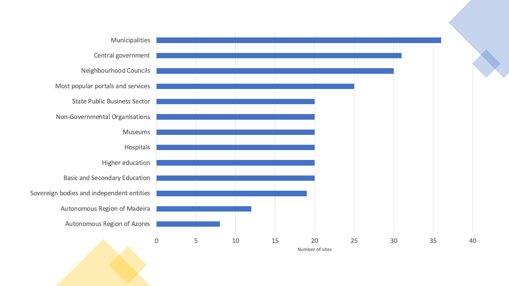
Note: if you are unable to consult the following chart for any reason, see the data in Table 41.
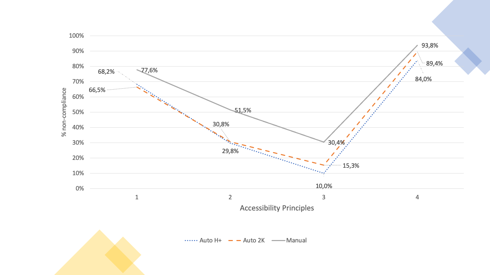
For the simplified monitoring analysis, we used two sample compositions to submit to automatic validators: one with fewer pages and one with more pages. The first based on the method that AMA is using at the Portuguese Web Accessibility Observatory, which consists of a sample composed of the 1st page plus all pages belonging to the domain hyperlinked from the first page, which we have designated as Home+ (H+). The second, which we have designated 2K because it consists of a collection with several levels of depth up to a maximum of 2,000 pages. On average, Home+ produced samples with an average of 80 pages per website while 2K produced samples of 1000 pages on average per website.
In essence, we wanted to answer the question: is the Home+ sample representative enough or will we have to increase the number of pages we are using at the Observatory? When analysing Graph 02 which shows us the average non-compliance rates of the clauses of the European Standard that make up each accessibility principle, we find that the non-compliance rates for the 4 principles follow similar trends in both automatically analysed samples (i.e. H+ and 2K).
Another of the questions at the outset was related to the effect on the results caused by expert validation (in-depth monitoring). To what extent does in-depth monitoring corroborate or not the results of the two-analysis carried out exclusively with automatic validators (simplified monitoring)? From the analysis of the Graph 02 we realise that the principles with the best and worst compliance states in simplified monitoring are also the worst and the best in in-depth monitoring, but the scenario found by in-depth monitoring is, on average, 1 ½ times worse than that revealed by simplified monitoring. For the “Understandable” principle, in-depth monitoring even reveals a picture three times worse than the simplified monitoring. This reflects the importance of manual expert assessments. There is, however, one aspect on which the two evaluation methods agree. When observing the non-compliance rates for each of the 4 Web accessibility principles listed by the W3C, both methods point to the ‘Perceivable’ principle and the ‘Robust’ principle as having the highest non-compliance rates — in the range of 78% and 94% respectively. It is also worth noting that the scenarios found by the automatic and manual evaluations in these two principles are only 10% apart, which leads us to conclude the good work of automatic tools in detecting non-compliances in the principles of “Perceivable” and “Robust” accessibility.
In-depth monitoring is more effective in detecting compliance levels than simplified monitoring, but this analysis consumes more resources and time. For this reason, it is applied to a small number of pages. In this analysis, the simplified monitoring was carried out in a universe of 281,706 pages (sample 2K) and 19,931 (sample Home+). In-depth monitoring has been applied to a universe of 477 pages.
The selection of mobile applications consisted of 8 applications that made up the top of the most used applications present in the catalogue https://www.app.gov.pt, in its iOS version and its Android version, making, in practice, a total of 16 applications — it is proven that the iOS version and Android version of the same application require, in terms of accessibility, two independent reviews. 144 screens were analysed, averaging 9 screens per application. The average rate of non-compliance was 51% for iOS applications and 53% for Android applications, thus not allowing it to be clearly said that the applications of one version are better than the others. In the “Robust” accessibility principle, the average rate of non-compliance per version is equal — i.e., 87.5%. iOS applications are best presented in the “Operable” and “Understandable” principles, but on the “Perceivable” principle, Android applications are slightly better than iOS applications.
Of the 4 principles of accessibility, those with the highest levels of non-compliance are “Perceivable” and “Robust”. “Perceivable” is very penalising, for example, of the visually impaired users (blind or low vision) and deaf people. On the other hand, “Robust” penalises all users who make use of technologies to transform information to their reading and navigation capabilities. These technologies include assistive technologies — screen readers with speech synthesiser or braille displays, used by blind people — but also, globally, any indexing, navigating or visualisation technology that needs to interoperate with information. The “Perceivable” principle appears with non-conformity rates in the order of 65%. The ‘Robust’ principle, on the other hand, appears with very high rates of non-compliance, in the order of 90%.
Note: if you are unable to consult the following chart for any reason, see the data in Table 42.
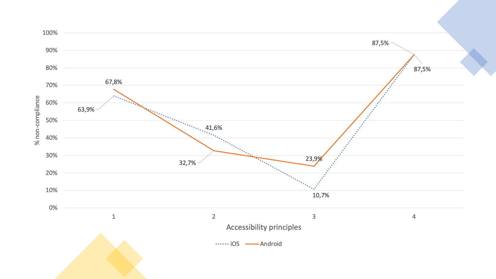
The 4 accessibility principles are affected in the same way on websites and mobile applications — the best match the best and the worst match the worst. However, mobile applications are always better than websites in all 4 principles — on average 10 percentage points higher than websites. The ‘Robust’ principle is presented with rates of non-compliance around 90%, followed by the ‘Perceivable’ principle with values around 70%. On the other hand, the ‘Understandable’ and ‘Operable’ principles show significantly lower non-compliance rates, respectively around 15% and 40% for applications and 30% and 50% for websites.
Note: if you are unable to consult the following chart for any reason, see the data in Table 43.
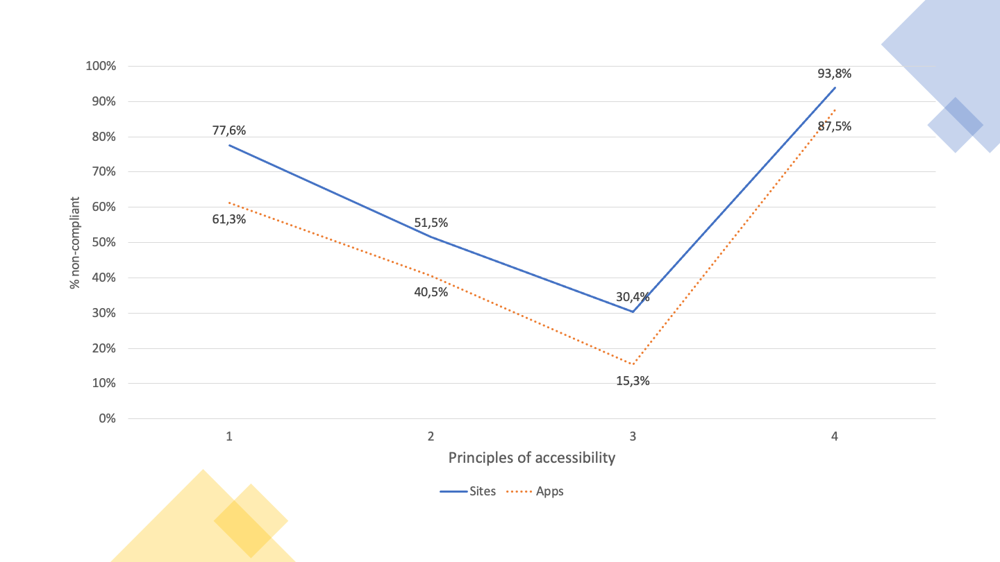
Which users face the highest number of barriers? In European Standard EN 301 549 a relationship is made between the clauses representing the good accessibility practices to be applied and the users benefiting from these practices named as Functional Performance Statements. This more elaborate name relates to the fact that, by referring, for example, to ‘Usage without vision’, it is intended to refer not only to people with vision disabilities, but to all those who, in a given situation, are unable or limited in the use of vision — e.g. someone who, due to the intense sunlight of a summer day, is unable or have more difficulty to use a smartphone on the street.
Thus, the data collected (see Graph 05) tell us that this sample has non-conformities in the clauses that primarily affect:
‘Usage with limited manipulation and strength’, ‘Usage with limited cognitive capabilities’ and ‘Usage without hearing’ appear with non-compliance rates in average between 30% and 40%.
Note: if you are unable to consult the following chart for any reason, see the data in Table 44.
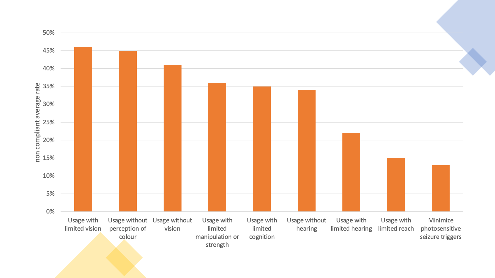
From the analysis carried out on websites and mobile applications, high rates of non-compliance in the ‘Perceivable’ and ‘Robust’ principles between 80% and almost 100% — 97% of non-compliance of the ‘Robust’ principle in the in-depth monitoring of websites have been detected regardless of sample size and regardless of the monitoring method used.
It is therefore not surprising that the 11 clauses with the highest failure rate of websites in in-depth monitoring were:
From this group of 11 clauses, 8 are part of the ‘Perceivable’ principle, where usage depends on vision and hearing, 2 for the ‘Robust’ principle, where there is interoperability with assistive technologies and 1 for the ‘Operable’ principle, where is the manipulation of digital interfaces with alternative technologies to the mouse, such as the keyboard and all their emulators.
It is also interesting to analyse the distribution of the clauses of EN 301 549 by WCAG 2.1 levels ‘A’ and ‘AA’. Although the European Standard does not make this distinction, considering all clauses equally, distribution can facilitate those facing the task of correcting the problems encountered. W3C says that “A” level problems affect more people and that it’s a good starting point for the rectification work out there. So, we included in the executive summary (see graphic below) Graph 13 which shows us the ‘A’ level clauses that were analysed in the present study. See also Graph 14 for the ‘AA’ level clauses.
Note: if you are unable to consult the following chart for any reason, see the data in Table 32.
The graph above shows us a scenario where it is possible to verify the average non-compliance rates of accessibility clauses. The highest non-compliance rates occupy the leftmost positions in the bar chart, and it is immediately possible to perceive that non-compliance affects 30% to 40% of the total clauses. On the contrary, 60% to 70% of the clauses that can be seen, are clauses that comply or clauses that do not apply. This type of data shows more clearly what work needs to be done. The data collected by the AccessMonitor – the Web Accessibility validator used and developed by AMA – also left us a positive track by finding that 78% of the sites have an ‘AccessMonitor score’ greater than 5 (this on a scale from 0 to 10, where 10 represents good accessibility practices).
Similar results were observed in the 24 mobile applications. Problems with:
Once again, we are talking about clauses that are behind the ‘Perceivable’ principle (3 clauses), ‘Robust’ (1) and ‘Operable’ (1).
On the 281 websites analysed, accessibility statements were found in 13 websites, corresponding to 4.6% of the sample. However, 29 other websites were identified with an accessibility page, but which did not correspond to a statement built in accordance with the model proposed in Decree-Law No 83/2018. If the entities to which these websites belong to, correct their statements, we will soon have 15% websites with Accessibility Statements.
The monitoring activities took place in the period from October 2021 to March 2022, according to the following distribution:
Monitoring is the responsibility of the Agency for Administrative Modernisation, I.P. (AMA). To carry out the monitoring activities and to prepare this report, AMA has contracted the services of FCIÊNCIAS.ID — Associação para a Investigação e Desenvolvimento de Ciências.
The sample of websites was provided by AMA, comprising a total of 281 websites. The number of websites in the sample results from the minimum size set out in point 2.1 of Annex I of the Implementing Decision (EU) 2018/1524, the value being equivalent to two sites per 100,000 inhabitants plus 75 sites. Given that the population resident in Portugal in 2020 is 10,298,252 inhabitants (according to INE statistics) the minimum number is 281 sites. The initial sample was analysed to ensure that the sites included were accessible to the monitoring activities and that they actually corresponded to different domains (i.e. that they did not redirect to other domains in the sample). After some adjustments, the final sample is as attached in Table 45.
The sample consists of a total of 281 websites and 16 mobile applications. The sample includes websites of different levels of administration as can be seen in Table 01.
| Levels of administration | Number of sites | Percentage of sites |
|---|---|---|
| State websites | 75 | 27% |
| Regional websites | 20 | 7% |
| Local websites | 66 | 23% |
| Other websites of bodies governed by public law | 80 | 28% |
| Other websites | 40 | 14% |
It was also tried to ensure that the websites represented the different services provided by public sector bodies. The distribution of websites by type of service, presented in Table 02, illustrates the diversity of services that were considered in the sample.
| Type of Service | Number of sites | Percentage of sites |
|---|---|---|
| Central Government | 31 | 11 % |
| Basic and Secondary Education | 20 | 7 % |
| Higher Education | 20 | 7 % |
| Hospitals | 20 | 7 % |
| Neighbourhood Councils | 30 | 11 % |
| Municipalities | 36 | 13 % |
| Museums | 20 | 7 % |
| Non-Governmental Organisations | 20 | 7 % |
| Sovereign Bodies and Independent Entities | 19 | 7 % |
| Most popular portals and services | 25 | 9 % |
| Autonomous Region of Madeira | 12 | 4 % |
| Autonomous Region of the Azores | 8 | 3 % |
| State Public Business Sector | 20 | 7 % |
All 281 websites were initially considered for the simplified monitoring method. For this monitoring period it was decided to build two samples of pages for simplified monitoring:
Table 03 presents descriptive statistics of the sample of pages. Analysing the sample it is possible to notice that, on average, the sampled sites have 79 pages linked from the homepage and that, on average, each site has more than a thousand pages. This figure will in fact be higher since we have limited the collection to two thousand pages per site and 63 sites have reached this limit. This also means that in 78% (218/281 sites) of the sampled websites we are working with the total number of pages. Table 03 also presents statistics linked to the size of the pages. For each page the number of HTML elements was counted and, on the basis of this number, sites with at least 10 pages having at least 100 HTML elements were identified. As a result of this analysis, it was observed that, in the Home+ sample, 15 % of the websites did not reach this limit. With the 2K sample, the percentage of websites not reaching this limit is 9%.
| Sample | Home+ | 2K |
|---|---|---|
| Websites | 281 | 281 |
| Total pages | 22,489 | 281,706 |
| Pages by website | 80 | 1,003 |
| Pages with 100 or more HTML elements | 20,042 (89%) | 223,398 (79%) |
| Websites with 10 or more pages with 100 or more HTML elements | 240 (85%) | 255 (91%) |
The sample of websites took into account the results of the simplified monitoring and was composed of the following criteria:
The final sample of websites for in-depth monitoring is annexed in Table 46.
The sampled mobile applications were indicated by AMA. The top applications were chosen from the list of government applications available at https://www.app.gov.pt. The iOS and Android applications of the same entity were considered individually in this analysis, and the two versions of 8 applications were analysed, totalling 16 mobile applications.
The final sample of mobile applications for in-depth monitoring is annexed in Table 47.
The sample pages of the 281 websites were obtained through the web crawling mechanism. In order to ensure the best possible coverage, two tools have been used for this purpose:
For the evaluation of the accessibility of each page of the sample, two automatic accessibility assessment tools were considered:
The clauses of EN 301 549 tested by AccessMonitor are presented in Table 04, together with the corresponding WCAG success criteria.
| EN Clause | Clause description | WCAG SC | SC description |
|---|---|---|---|
| 9.1.1.1 | Non-text content | 1.1.1 | Non-text content |
| 9.1.2.1 | Audio-only and video-only (pre-recorded) | 1.2.1 | Audio-only and video-only (pre-recorded) |
| 9.1.3.1 | Info and relationships | 1.3.1 | Info and relationships |
| 9.1.3.2 | Meaningful sequence | 1.3.2 | Meaningful sequence |
| 9.1.4.3 | Contrast (minimum) | 1.4.3 | Contrast (minimum) |
| 9.1.4.4 | Resise text | 1.4.4 | Resise text |
| 9.1.4.5 | Images of text | 1.4.5 | Images of text |
| 9.2.1.1 | Keyboard | 2.1.1 | Keyboard |
| 9.2.2.1 | Timing adjustable | 2.2.1 | Timing adjustable |
| 9.2.2.2 | Pause, stop, hide | 2.2.2 | Pause, stop, hide |
| 9.2.4.1 | Bypass blocks | 2.4.1 | Bypass Blocks |
| 9.2.4.2 | Page titled | 2.4.2 | Page titled |
| 9.2.4.4 | Link purpose (in context) | 2.4.4 | Link purpose (in context) |
| 9.2.4.5 | Multiple ways | 2.4.5 | Multiple ways |
| 9.2.4.6 | Headings and labels | 2.4.6 | Heading and labels |
| 9.2.4.7 | Focus visible | 2.4.7 | Focus visible |
| 9.3.1.1 | Language of page | 3.1.1 | Language of page |
| 9.3.2.1 | On focus | 3.2.1 | On focus |
| 9.3.2.2 | On input | 3.2.2 | On input |
| 9.3.3.2 | Labels or instructions | 3.3.2 | Labels or instructions |
| 9.4.1.1 | Parsing | 4.1.1 | Parsing |
| 9.4.1.2 | Name, role, value | 4.1.2 | Name, role, value |
The Table 05 presents the clauses of EN 301 549 as well as the corresponding success criteria, tested by QualWeb through ACT rules.
| EN Clause | Clause description | WCAG SC | SC description |
|---|---|---|---|
| 9.1.1.1 | Non-text content | 1.1.1 | Non-text content |
| 9.1.2.1 | Audio-only and video-only (pre-recorded) | 1.2.1 | Audio-only and video-only (pre-recorded) |
| 9.1.2.2 | Captions (pre-recorded) | 1.2.2 | Captions (pre-recorded) |
| 9.1.2.3 | Audio description or media alternative (pre-recorded) | 1.2.3 | Audio description or media alternative (pre-recorded) |
| 9.1.2.5 | Audio description (pre-recorded) | 1.2.5 | Audio description (pre-recorded) |
| 9.1.3.1 | Info and relationships | 1.3.1 | Info and relationships |
| 9.1.3.4 | Orientation | 1.3.4 | Orientation |
| 9.1.3.5 | Identify input purpose | 1.3.5 | Identify input purpose |
| 9.1.4.2 | Audio control | 1.4.2 | Audio control |
| 9.1.4.3 | Contrast (minimum) | 1.4.3 | Contrast (minimum) |
| 9.1.4.4 | Resise text | 1.4.4 | Resise text |
| 9.1.4.12 | Text spacing | 1.4.12 | Text spacing |
| 9.2.1.1 | Keyboard | 2.1.1 | Keyboard |
| 9.2.2.1 | Timing adjustable | 2.2.1 | Timing adjustable |
| 9.2.4.1 | Bypass blocks | 2.4.1 | Bypass Blocks |
| 9.2.4.2 | Page titled | 2.4.2 | Page titled |
| 9.2.4.4 | Link purpose (in context) | 2.4.4 | Link purpose (in context) |
| 9.2.4.7 | Focus visible | 2.4.7 | Focus visible |
| 9.2.5.3 | Label in name | 2.5.3 | Label in name |
| 9.3.1.1 | Language of page | 3.1.1 | Language of page |
| 9.3.1.2 | Language of parts | 3.1.2 | Language of parts |
| 9.3.3.1 | Error identification | 3.3.1 | Error identification |
| 9.4.1.1 | Parsing | 4.1.1 | Parsing |
| 9.4.1.2 | Name, role, value | 4.1.2 | Name, role, value |
The combination of the clauses tested by AccessMonitor and QualWeb, presented in Table 04 and Table 05, respectively, shows that the coverage rate of the 2 tools compared to the total of the clauses in Chapter 9 of the European Standard is 65%. Of those tested, 75 % have already used harmonised ACT (Accessibility Conformance Testing) rules.
The evaluation process consisted of the collection of QualWeb evaluations followed by the calculation of AccessMonitor results from QualWeb results. This ensures that the results presented by the two tools relate to the same source code.
During the evaluation process there were several occurrences of pages that did not respond to the evaluator’s requests. Multiple attempts were made to obtain a response, separated by at least two days between them. Still, it was not possible to evaluate a total of 27.022 pages, which corresponds to 9.6 % of the pages in the sample. It should be noted that, as a result of the problems with the evaluations, it was not possible to evaluate any page of three sites in the sample Home+, as well as no page of two websites in the sample 2K.
The testing methodology for Trusted Testermanual evaluations was applied. This methodology is based on Web Content Accessibility Guidelines (WCAG) 2.0. Considering that this analysis follows standard EN 301 549 based on WCAG 2.1, new tests have been added to the tests originally included in the Trusted Tester methodology, comprising the WCAG Success Criteria not covered. The added tests were based on the sufficient techniques provided in WCAG 2.1 and are presented in Table 48 in the annexes. Three auxiliary tools were used to support the tests performed:
The Table 06 presents the clauses of standard EN 301 549 that were considered in this evaluation, together with the corresponding WCAG success criteria.
| EN Clause | Clause description | WCAG SC | SC description |
|---|---|---|---|
| 9.1.1.1 | Non-text Content | 1.1.1 | Non-text Content |
| 9.1.2.1 | Audio-only and Video-only (Pre-recorded) | 1.2.1 | Audio-only and Video-only (Pre-recorded) |
| 9.1.2.2 | Captions (Pre-recorded) | 1.2.2 | Captions (Pre-recorded) |
| 9.1.2.3 | Audio Description or Media Alternative (Pre-recorded) | 1.2.3 | Audio Description or Media Alternative (Pre-recorded) |
| 9.1.2.5 | Audio Description (Pre-recorded) | 1.2.5 | Audio Description (Pre-recorded) |
| 9.1.3.1 | Info and Relationships | 1.3.1 | Info and Relationships |
| 9.1.3.2 | Meaningful Sequence | 1.3.2 | Meaningful Sequence |
| 9.1.3.3 | Sensory Characteristics | 1.3.3 | Sensory Characteristics |
| 9.1.3.4 | Orientation | 1.3.4 | Orientation |
| 9.1.3.5 | Identify Input Purpose | 1.3.5 | Identify Input Purpose |
| 9.1.4.1 | Use of Colour | 1.4.1 | Use of Colour |
| 9.1.4.2 | Audio Control | 1.4.2 | Audio Control |
| 9.1.4.3 | Contrast (Minimum) | 1.4.3 | Contrast (Minimum) |
| 9.1.4.4 | Resize Text | 1.4.4 | Resize Text |
| 9.1.4.5 | Images of Text | 1.4.5 | Images of Text |
| 9.1.4.10 | Reflow | 1.4.10 | Reflow |
| 9.1.4.11 | Non-Text Contrast | 1.4.11 | Non-Text Contrast |
| 9.1.4.12 | Text Spacing | 1.4.12 | Text Spacing |
| 9.1.4.13 | Content on Hover or Focus | 1.4.13 | Content on Hover or Focus |
| 9.2.1.1 | Keyboard | 2.1.1 | Keyboard |
| 9.2.1.2 | No Keyboard Trap | 2.1.2 | No Keyboard Trap |
| 9.2.1.4 | Character Key Shortcuts | 2.1.4 | Character Key Shortcuts |
| 9.2.2.1 | Timing Adjustable | 2.2.1 | Timing Adjustable |
| 9.2.2.2 | Pause, Stop, Hide | 2.2.2 | Pause, Stop, Hide |
| 9.2.3.1 | Three Flashes or Below | 2.3.1 | Three Flashes or Below |
| 9.2.4.1 | Bypass Blocks | 2.4.1 | Bypass Blocks |
| 9.2.4.2 | Page Titled | 2.4.2 | Page Titled |
| 9.2.4.3 | Focus Order | 2.4.3 | Focus Order |
| 9.2.4.4 | Link Purpose (In Context) | 2.4.4 | Link Purpose (In Context) |
| 9.2.4.5 | Multiple Ways | 2.4.5 | Multiple Ways |
| 9.2.4.6 | Headings and Labels | 2.4.6 | Headings and Labels |
| 9.2.4.7 | Focus Visible | 2.4.7 | Focus Visible |
| 9.2.5.1 | Pointer Gestures | 2.5.1 | Pointer Gestures |
| 9.2.5.2 | Pointer Cancellation | 2.5.2 | Pointer Cancellation |
| 9.2.5.3 | Label in Name | 2.5.3 | Label in Name |
| 9.2.5.4 | Motion Actuation | 2.5.4 | Motion Actuation |
| 9.3.1.1 | Language of Page | 3.1.1 | Language of Page |
| 9.3.1.2 | Language of Parts | 3.1.2 | Language of Parts |
| 9.3.2.1 | On Focus | 3.2.1 | On Focus |
| 9.3.2.2 | On Input | 3.2.2 | On Input |
| 9.3.2.3 | Consistent Navigation | 3.2.3 | Consistent Navigation |
| 9.3.2.4 | Consistent Identification | 3.2.4 | Consistent Identification |
| 9.3.3.1 | Error Identification | 3.3.1 | Error Identification |
| 9.3.3.2 | Labels or Instructions | 3.3.2 | Labels or Instructions |
| 9.3.3.3 | Error Suggestion | 3.3.3 | Error Suggestion |
| 9.3.3.4 | Error Prevention (Legal, Financial, Data) | 3.3.4 | Error Prevention (Legal, Financial, Data) |
| 9.4.1.1 | Parsing | 4.1.1 | Parsing |
| 9.4.1.2 | Name, Role, Value | 4.1.2 | Name, Role, Value |
| 9.4.1.3 | Status Messages (WCAG 2.1) | 4.1.3 | Status Messages (WCAG 2.1) |
| 9.6 | WCAG Conformance Requirements | 5.2 | WCAG Conformance Requirements |
| 10.1.1.1 | Non-text Content | 1.1.1 | Non-text Content |
| 10.1.2.1 | Audio-only and Video-only (Pre-recorded) | 1.2.1 | Audio-only and Video-only (Pre-recorded) |
| 10.1.2.2 | Captions (Pre-recorded) | 1.2.2 | Captions (Pre-recorded) |
| 10.1.2.3 | Audio Description or Media Alternative (Pre-recorded) | 1.2.3 | Audio Description or Media Alternative (Pre-recorded) |
| 10.1.2.5 | Audio Description (Pre-recorded) | 1.2.5 | Audio Description (Pre-recorded) |
| 10.1.3.1 | Info and Relationships | 1.3.1 | Info and Relationships |
| 10.1.3.2 | Meaningful Sequence | 1.3.2 | Meaningful Sequence |
| 10.1.3.3 | Sensory Characteristics | 1.3.3 | Sensory Characteristics |
| 10.1.3.4 | Orientation | 1.3.4 | Orientation |
| 10.1.3.5 | Identify Input Purpose | 1.3.5 | Identify Input Purpose |
| 10.1.4.1 | Use of Colour | 1.4.1 | Use of Colour |
| 10.1.4.2 | Audio Control | 1.4.2 | Audio Control |
| 10.1.4.3 | Contrast (Minimum) | 1.4.3 | Contrast (Minimum) |
| 10.1.4.4 | Resize Text | 1.4.4 | Resize Text |
| 10.1.4.5 | Images of Text | 1.4.5 | Images of Text |
| 10.1.4.10 | Reflow | 1.4.10 | Reflow |
| 10.1.4.11 | Non-Text Contrast | 1.4.11 | Non-Text Contrast |
| 10.1.4.12 | Text Spacing | 1.4.12 | Text Spacing |
| 10.1.4.13 | Content on Hover or Focus | 1.4.13 | Content on Hover or Focus |
| 10.2.1.1 | Keyboard | 2.1.1 | Keyboard |
| 10.2.1.2 | No Keyboard Trap | 2.1.2 | No Keyboard Trap |
| 10.2.1.4 | Character Key Shortcuts | 2.1.4 | Character Key Shortcuts |
| 10.2.2.1 | Timing Adjustable | 2.2.1 | Timing Adjustable |
| 10.2.2.2 | Pause, Stop, Hide | 2.2.2 | Pause, Stop, Hide |
| 10.2.3.1 | Three Flashes or Below | 2.3.1 | Three Flashes or Below |
| 10.2.4.2 | Page Titled | 2.4.2 | Page Titled |
| 10.2.4.3 | Focus Order | 2.4.3 | Focus Order |
| 10.2.4.4 | Link Purpose (In Context) | 2.4.4 | Link Purpose (In Context) |
| 10.2.4.6 | Headings and Labels | 2.4.6 | Headings and Labels |
| 10.2.4.7 | Focus Visible | 2.4.7 | Focus Visible |
| 10.2.5.1 | Pointer Gestures | 2.5.1 | Pointer Gestures |
| 10.2.5.2 | Pointer Cancellation | 2.5.2 | Pointer Cancellation |
| 10.2.5.3 | Label in Name | 2.5.3 | Label in Name |
| 10.2.5.4 | Motion Actuation | 2.5.4 | Motion Actuation |
| 10.3.1.1 | Language of Page | 3.1.1 | Language of Page |
| 10.3.1.2 | Language of Parts | 3.1.2 | Language of Parts |
| 10.3.2.1 | On Focus | 3.2.1 | On Focus |
| 10.3.2.2 | On Input | 3.2.2 | On Input |
| 10.3.3.1 | Error Identification | 3.3.1 | Error Identification |
| 10.3.3.2 | Labels or Instructions | 3.3.2 | Labels or Instructions |
| 10.3.3.3 | Error Suggestion | 3.3.3 | Error Suggestion |
| 10.3.3.4 | Error Prevention (Legal, Financial, Data) | 3.3.4 | Error Prevention (Legal, Financial, Data) |
| 10.4.1.1 | Parsing | 4.1.1 | Parsing |
| 10.4.1.2 | Name, Role, Value | 4.1.2 | Name, Role, Value |
| 10.4.1.3 | Status Messages (WCAG 2.1) | 4.1.3 | Status Messages (WCAG 2.1) |
For each sampled website, a set of pages to be included in each assessment was established, as defined in Commission Implementing Decision (EU) 2018/1524 of 11 October 2018. This representative sample considers the following pages:
Each page included in the representative sample of each website was evaluated according to the WCAG 2.1 AA success criteria. For each page, one of the following results was provided:
Data collection was supported by the WCAG-EM Report Tool. At the end of the evaluation of each website, the report generated was recorded for future analysis.
The results of the in-depth monitoring of websites have been complemented by usability testing for people with disabilities.
For these tests, 6 participants were recruited, two with visual impairment, two with motor impairment and two with hearing impairment. All participants were recruited through contacts with local institutions. In Table 07 and Table 08 we can observe that all participants have been computer users for more than five years, and that they self-evaluate themselves with different levels of expertise in the use of computers (between 1 and 5, where 1 represents beginner and 5 specialist). All sessions were conducted remotely using Zoom and screen sharing. Each session took about 45 min. Each session began with a brief introduction to the study, followed by a demographic questionnaire with questions related to computer usage and experience. Each participant was instructed to perform one task at a time, being able to ask the evaluator at any time to repeat the task. Participants were asked to think aloud while performing the task. The evaluator present took notes while observing participants’ interactions with the websites. When a participant was trapped in one step of the task, the evaluator helped overcome the problem so that the participant could explore the rest of the task. At the end of every two tasks with each of the websites, a semi-structured interview was carried out with three initial questions focused on the experience with the website, its accessibility, and finally what could be improved. Participants were rewarded for their contribution with a gift card worth EUR 20.
| ID | Age | Visual Capability | Motor Capability | Hearing Capability |
|---|---|---|---|---|
| PC1 | 35 | Totally blind (no light perception) | No limitations | No limitations |
| PC2 | 34 | Severe low vision (visual acuity less than 6/60) | No limitations | No limitations |
| MIP1 | 52 | Sighted | With limited manipulation capability and/or strength | No limitations |
| PDM2 | 25 | Sighted | With limited manipulation capability and/or strength | No limitations |
| PS1 | 42 | Sighted | No limitations | Deep deafness |
| PS2 | 28 | Sighted | No limitations | Deep deafness |
| ID | Assistive Technology | Computer Usage | Expertise |
|---|---|---|---|
| PC1 | Screen Reader | Over 5 years | 3 |
| PC2 | Screen Reader | Over 5 years | 4 |
| MIP1 | None | Over 5 years | 3 |
| PDM2 | None | Over 5 years | 5 |
| PS1 | None | Over 5 years | 5 |
| PS2 | None | Over 5 years | 5 |
For these tests, the 5 websites considered were the ones with the highest failure rates in the in-depth methodology according to the functional performance statement for each group of users recruited. Some websites obtained the same failure rate in their functional performance statement. In these cases, websites with the highest failure rate were considered considering all clauses. This sample consisted of 5 websites, and for each of them, 2 tasks were defined considering the primary use or essential functionalities of each one. The tasks were distributed in two groups, with equivalent effort. Each task was performed by one participant from each group of recruited users.
The iOS and Android versions of the same application were considered individually in this analysis. The apps were installed directly from the respective App Stores and standard user accounts were used for their evaluation. We have selected a set of screens to assess in each application following the methodology set out in points 2 and 3 of Annex I to the COMMISSION IMPLEMENTING DECISION (EU) 2018/1524 of 11 October 2018. This representative sample considers the following screens:
In screen analysis, mobile interface components such as App Drawers that are present on multiple screens were considered to be part of all screens where they are present.
The following tools and devices were used to support the manual evaluation of mobile applications:
The collection of evaluation data was supported by the WCAG-EM Report Tool.
The testing methodology for manual evaluations was based on the Trusted Tester methodology. This methodology is based on Web Content Accessibility Guidelines (WCAG) 2.0. Considering that this analysis follows the standard EN 301 549 based on WCAG 2.1, new tests have been added to the tests originally included in the Trusted Tester methodology, comprising non-covered Success Criteria. The added tests were based on sufficient techniques provided in WCAG 2.1. All possible tests to perform or adapt them have been performed in all applications. The success criteria considered in this assessment correspond to the AA level of WCAG 2.1, as set out in standard EN 301 594, and are presented in Table 09. Criteria are marked ‘partially’ when it was not possible to apply the test to one or more applications. In the specific case of the clause ‘10.1.4.10 Reflow, the criterion was not possible to evaluate in iOS (because there is no equivalent functionality) being evaluated only on Android. The clauses ‘10.1.4.3 Contrast (minimum)’ and ‘10.1.4.11 Non-text contrast’ have not been evaluated in 3 Android applications because the screenshot functionality is locked in them which prevents contrast testing.
| EN Clause | Clause description | WCAG SC | SC description | Assessed |
|---|---|---|---|---|
| 10.1.1.1 | Non-text Content | 1.1.1 | Non-text Content | Yes |
| 10.1.2.1 | Audio-only and Video-only (Pre-recorded) | 1.2.1 | Audio-only and Video-only (Pre-recorded) | Yes |
| 10.1.2.2 | Captions (Pre-recorded) | 1.2.2 | Captions (Pre-recorded) | Yes |
| 10.1.2.3 | Audio Description or Media Alternative (Pre-recorded) | 1.2.3 | Audio Description or Media Alternative (Pre-recorded) | Yes |
| 10.1.2.5 | Audio Description (Pre-recorded) | 1.2.5 | Audio Description (Pre-recorded) | Yes |
| 10.1.3.1 | Info and Relationships | 1.3.1 | Info and Relationships | Yes |
| 10.1.3.2 | Meaningful Sequence | 1.3.2 | Meaningful Sequence | No |
| 10.1.3.3 | Sensory Characteristics | 1.3.3 | Sensory Characteristics | Yes |
| 10.1.3.4 | Orientation | 1.3.4 | Orientation | Yes |
| 10.1.3.5 | Identify Input Purpose | 1.3.5 | Identify Input Purpose | No |
| 10.1.4.1 | Use of Colour | 1.4.1 | Use of Colour | Yes |
| 10.1.4.2 | Audio Control | 1.4.2 | Audio Control | Yes |
| 10.1.4.3 | Contrast (Minimum) | 1.4.3 | Contrast (Minimum) | Partially |
| 10.1.4.4 | Resize Text | 1.4.4 | Resise Text | Yes |
| 10.1.4.5 | Images of Text | 1.4.5 | Images of Text | Yes |
| 10.1.4.10 | Reflow | 1.4.10 | Reflow | Partially |
| 10.1.4.11 | Non-Text Contrast | 1.4.11 | Non-Text Contrast | Partially |
| 10.1.4.12 | Text Spacing | 1.4.12 | Text Spacing | No |
| 10.1.4.13 | Content on Hover or Focus | 1.4.13 | Content on Hover or Focus | No |
| 10.2.1.1 | Keyboard | 2.1.1 | Keyboard | Yes |
| 10.2.1.2 | No Keyboard Trap | 2.1.2 | No Keyboard Trap | Yes |
| 10.2.1.4 | Character Key Shortcuts | 2.1.4 | Character Key Shortcuts | No |
| 10.2.2.1 | Timing Adjustable | 2.2.1 | Timing Adjustable | Yes |
| 10.2.2.2 | Pause, Stop, Hide | 2.2.2 | Pause, Stop, Hide | Yes |
| 10.2.3.1 | Three Flashes or Below | 2.3.1 | Three Flashes or Below | Yes |
| 10.2.4.2 | Page Titled | 2.4.2 | Page Titled | Yes |
| 10.2.4.3 | Focus Order | 2.4.3 | Focus Order | Yes |
| 10.2.4.4 | Link Purpose | 2.4.4 | Link Purpose | Yes |
| 10.2.4.6 | Headings and Labels | 2.4.6 | Headings and Labels | Yes |
| 10.2.4.7 | Focus Visible | 2.4.7 | Focus Visible | Yes |
| 10.2.5.1 | Pointer Gestures | 2.5.1 | Pointer Gestures | Yes |
| 10.2.5.2 | Pointer Cancellation | 2.5.2 | Pointer Cancellation | Yes |
| 10.2.5.3 | Label in Name | 2.5.3 | Label in Name | Yes |
| 10.2.5.4 | Motion Actuation | 2.5.4 | Motion Actuation | Yes |
| 10.3.1.1 | Language of Page | 3.1.1 | Language of Page | No |
| 10.3.1.2 | Language of Parts | 3.1.2 | Language of Parts | No |
| 10.3.2.1 | On Focus | 3.2.1 | On Focus | Yes |
| 10.3.2.2 | On Input | 3.2.2 | On Input | Yes |
| 10.3.3.1 | Error Identification | 3.3.1 | Error Identification | Yes |
| 10.3.3.2 | Labels or Instructions | 3.3.2 | Labels or Instructions | Yes |
| 10.3.3.3 | Error Suggestion | 3.3.3 | Error Suggestion | Yes |
| 10.3.3.4 | Error Prevention (Legal, Financial, Date) | 3.3.4 | Error Prevention (Legal, Financial, Date) | Yes |
| 10.4.1.1 | Parsing | 4.1.1 | Parsing | No |
| 10.4.1.2 | Name, Role, Value | 4.1.2 | Name, Role, Value | Yes |
| 10.4.1.3 | Status Messages (WCAG 2.1) | 4.1.3 | Status Messages (WCAG 2.1) | No |
| 11.1.1.1 | Non-text Content | 1.1.1 | Non-text Content | Yes |
| 11.1.2.1 | Audio-only and Video-only (Pre-recorded) | 1.2.1 | Audio-only and Video-only (Pre-recorded) | Yes |
| 11.1.2.2 | Captions (Pre-recorded) | 1.2.2 | Captions (Pre-recorded) | Yes |
| 11.1.2.3 | Audio Description or Media Alternative (Pre-recorded) | 1.2.3 | Audio Description or Media Alternative (Pre-recorded) | Yes |
| 11.1.2.5 | Audio Description (Pre-recorded) | 1.2.5 | Audio Description (Pre-recorded) | Yes |
| 11.1.3.1 | Info and Relationships | 1.3.1 | Info and Relationships | Yes |
| 11.1.3.2 | Meaningful Sequence | 1.3.2 | Meaningful Sequence | No |
| 11.1.3.3 | Sensory Characteristics | 1.3.3 | Sensory Characteristics | Yes |
| 11.1.3.4 | Orientation | 1.3.4 | Orientation | Yes |
| 11.1.3.5 | Identify Input Purpose | 1.3.5 | Identify Input Purpose | No |
| 11.1.4.1 | Use of Colour | 1.4.1 | Use of Colour | Yes |
| 11.1.4.2 | Audio Control | 1.4.2 | Audio Control | Yes |
| 11.1.4.3 | Contrast (Minimum) | 1.4.3 | Contrast (Minimum) | Partially |
| 11.1.4.4 | Resise Text | 1.4.4 | Resise Text | Yes |
| 11.1.4.5 | Images of Text | 1.4.5 | Images of Text | Yes |
| 11.1.4.10 | Reflow | 1.4.10 | Reflow | Partially |
| 11.1.4.11 | Non-Text Contrast | 1.4.11 | Non-Text Contrast | Partially |
| 11.1.4.12 | Text Spacing | 1.4.12 | Text Spacing | No |
| 11.1.4.13 | Content on Hover or Focus | 1.4.13 | Content on Hover or Focus | No |
| 11.2.1.1 | Keyboard | 2.1.1 | Keyboard | Yes |
| 11.2.1.2 | No Keyboard Trap | 2.1.2 | No Keyboard Trap | Yes |
| 11.2.1.4 | Character Key Shortcuts | 2.1.4 | Character Key Shortcuts | No |
| 11.2.2.1 | Timing Adjustable | 2.2.1 | Timing Adjustable | Yes |
| 11.2.2.2 | Pause, Stop, Hide | 2.2.2 | Pause, Stop, Hide | Yes |
| 11.2.3.1 | Three Flashes or Below | 2.3.1 | Three Flashes or Below | Yes |
| 11.2.4.2 | Page Titled | 2.4.2 | Page Titled | Yes |
| 11.2.4.3 | Focus Order | 2.4.3 | Focus Order | Yes |
| 11.2.4.4 | Link Purpose | 2.4.4 | Link Purpose | Yes |
| 11.2.4.6 | Headings and Labels | 2.4.6 | Headings and Labels | Yes |
| 11.2.4.7 | Focus Visible | 2.4.7 | Focus Visible | Yes |
| 11.2.5.1 | Pointer Gestures | 2.5.1 | Pointer Gestures | Yes |
| 11.2.5.2 | Pointer Cancellation | 2.5.2 | Pointer Cancellation | Yes |
| 11.2.5.3 | Label in Name | 2.5.3 | Label in Name | Yes |
| 11.2.5.4 | Motion Actuation | 2.5.4 | Motion Actuation | Yes |
| 11.3.1.1 | Language of Page | 3.1.1 | Language of Page | No |
| 11.3.1.2 | Language of Parts | 3.1.2 | Language of Parts | No |
| 11.3.2.1 | On Focus | 3.2.1 | On Focus | Yes |
| 11.3.2.2 | On Input | 3.2.2 | On Input | Yes |
| 11.3.3.1 | Error Identification | 3.3.1 | Error Identification | Yes |
| 11.3.3.2 | Labels or Instructions | 3.3.2 | Labels or Instructions | Yes |
| 11.3.3.3 | Error Suggestion | 3.3.3 | Error Suggestion | Yes |
| 11.3.3.4 | Error Prevention (Legal, Financial, Date) | 3.3.4 | Error Prevention (Legal, Financial, Date) | Yes |
| 11.4.1.1 | Parsing | 4.1.1 | Parsing | No |
| 11.4.1.2 | Name, Role, Value | 4.1.2 | Name, Role, Value | Yes |
| 11.4.1.3 | Status Messages (WCAG 2.1) | 4.1.3 | Status Messages (WCAG 2.1) | No |
At the end of the evaluation of each application, a report was recorded for future analysis. After conducting the evaluations, the results obtained were analysed, considering the clauses that are verified or violated.
After finalising the expert evaluation of all Android applications, the two less compliant were selected to conduct a study with users.
Four participants were recruited, two visually impaired and screen reader users, one user with motor impairment and one deaf user. In Table 10 and Table 11 we can observe that all participants have been mobile users for more than three years, and that they self-evaluate themselves with different levels of expertise in the use of smartphone (between 1 and 5, where 1 represents beginner and 5 specialist). Two had previous experience with one of the applications and one had tried in the past, unsuccessfully, to use the second. Participants were recruited by contacts with local institutions. The session with the participant P3 was conducted in person, while with the participants P1, P2 and P4, the session was remote using Zoom and screen sharing. The sessions lasted about 45 min. Each session started with a short demographic questionnaire with questions related to smartphone usage and experience. The participants then installed the two applications selected for the study if they did not have them on their device. Each participant was instructed to perform one task at a time, being able to ask the evaluator at any time to repeat the task. Participants were asked to think aloud while performing the task. The evaluator took notes while observing participants’ interactions with their devices. When a participant was trapped in one step of the task, the evaluator helped overcome the problem so that the participant could explore the rest of the task. At the end of every two tasks with each of the applications, authorisation was requested to record audio, and a semi-structured interview was performed with three initial questions focused on the application experience: 1) “How was your experience with this application?”; 2) “What is your opinion on the accessibility of this application?”; and 3) “What can be improved?” Participants were rewarded for their contribution with a gift card worth EUR 20.
| ID | Age | Vision Capability | Motor Capability | Hearing Capability |
|---|---|---|---|---|
| P1 | 42 | Sighted | With limited manipulation capability and/or strength | No limitations |
| P2 | 34 | Severe low vision (visual acuity less than 6/60) | No limitations | No limitations |
| P3 | 42 | Severe low vision (visual acuity less than 6/60) | No limitations | No limitations |
| ID | Assistive Technology | Smartphone Usage | Expertise | Experience with App 1 | Experience with App 2 |
|---|---|---|---|---|---|
| P1 | None | No | 3 | I've never used it | I've never used it |
| P2 | Screen Reader | Over 3 years | 4 | Use occasionally | I tried |
| P3 | Screen Reader | Over 3 years | 5 | I've used it before | I've never used it |
| P4 | None | Over 3 years | 1 | I've never used it | I've never used it |
According to Statcounter Global, in Portugal, the percentage of Android users is 72%, compared to 27% iOS. Since Android is the most popular (more than double) operating system in Portugal, user evaluations were conducted on Android applications. It should be noted that there were no restrictions on recruitment and that all users contacted to participate in the study were found to be Android users.
The least compliant Android applications were selected. However, it should be noted that two others, if selected, would have been inaccessible to screen reader users as it is not possible to interact with the elements necessary for navigation using a screen reader. In the selected applications, two typical tasks were created for the objectives inherent to them.
In total, 281 websites were analysed, of which 281,706 pages were obtained. Of this total, 254,684 pages were evaluated, corresponding to 90.4 % of the sample. It can also be noted that on six websites only one page could be obtained.
In the sample Home+, out of the 281 websites, 22,489 pages were collected, corresponding to an average of 80 pages per website. In Graph 07 it is possible to see the distribution of the number of pages per website and it is noticeable that for this sample most websites have less than 50 pages. The mode is 25 to 50-page sites. Please note that given the method of collecting pages from the Home+ sample, this number of pages also represents the number of links on the Homepage to the domain. The fact that three quarters of the sites have a number of links below 100 on the Homepage can be positive and beneficial for the accessibility of the site. On the contrary, 6.5 % of sites have more than 200 links on the Homepage alone and 1 % even reaches more than 500 hyperlinks, which leads to a complex homepage to navigate.
Note: if you are unable to consult the following chart for any reason, see the data in Table 12.
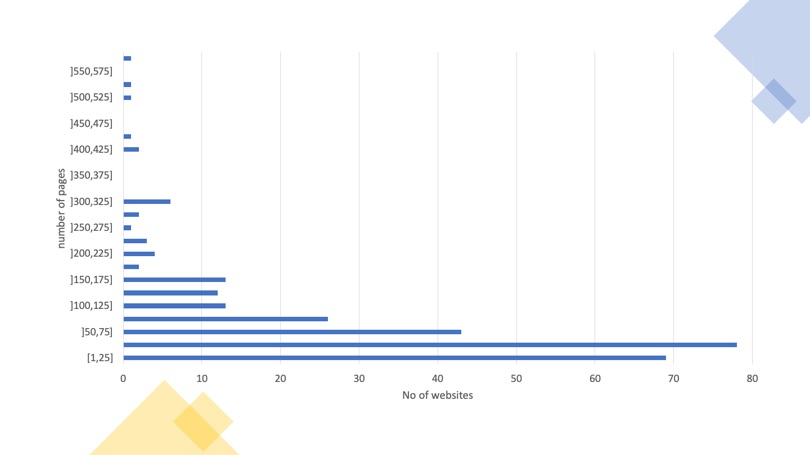
The Table 12 provides details on the distribution of pages by website in this sample.
| Page ranges | Frequency (number of websites) | Accumulated frequency (number of websites) | Frequency (% of websites) | Accumulated frequency (%) |
|---|---|---|---|---|
| [1,25] | 69 | 69 | 24.8% | 24.8% |
| ]25,50] | 78 | 147 | 28.1% | 52.9% |
| ]50,75] | 43 | 190 | 15.5% | 68.3% |
| ]75,100] | 26 | 216 | 9.4% | 77.7% |
| ]100,125] | 13 | 229 | 4.7% | 82.4% |
| ]125,150] | 12 | 241 | 4.3% | 86.7% |
| ]150,175] | 13 | 254 | 4.7% | 91.4% |
| ]175,200] | 2 | 256 | 0.7% | 92.1% |
| ]200,225] | 4 | 260 | 1.4% | 93.5% |
| ]225,250] | 3 | 263 | 1.1% | 94.6% |
| ]250,275] | 1 | 264 | 0.4% | 95.0% |
| ]275,300] | 2 | 266 | 0.7% | 95.7% |
| ]300,325] | 6 | 272 | 2.2% | 97.8% |
| ]325,350] | 0 | 272 | 0.0% | 97.8% |
| ]350,375] | 0 | 272 | 0.0% | 97.8% |
| ]375,400] | 0 | 272 | 0.0% | 97.8% |
| ]400,425] | 2 | 274 | 0.7% | 98.6% |
| ]425,450] | 1 | 275 | 0.4% | 98.9% |
| ]450,475] | 0 | 275 | 0.0% | 98.9% |
| ]475,500] | 0 | 275 | 0.0% | 98.9% |
| ]500,525] | 1 | 276 | 0.4% | 99.3% |
| ]525,550] | 1 | 277 | 0.4% | 99.6% |
| ]550,575] | 0 | 277 | 0.0% | 99.6% |
| ]575,600] | 1 | 278 | 0.4% | 100.0% |
Of the 281 websites, 3 failed to have at least one page evaluated, and 38 more failed the requirement to have at least 10 pages evaluated with 100 or more HTML elements, so they are not considered in the following automatic analysis. Thus, for this analysis only 240 websites with at least 10 pages evaluated with 100 or more HTML elements are considered. In total, in this sample, the results of the evaluations of 19,931 pages belonging to 240 sites were analysed.
The number (and percentage) of websites verifying or violating each clause is displayed in Table 13, as well as those requiring manual validation or not applicable on any website page.
| Clause EN 301 549 | WCAG Compliance Level | Non-conforming | Needing Manual Validation | Not Applicable |
|---|---|---|---|---|
| 9.1.1.1 Non-text Content | A | 173 (72.1%) | 0 (0%) | 0 (0%) |
| 9.1.2.1 Audio-only and Video-only (prerecorded) | A | 0 (0%) | 33 (13.8%) | 207 (86.3%) |
| 9.1.2.2 Captions (prerecorded) | A | 0 (0%) | 33 (13.8%) | 207 (86.3%) |
| 9.1.2.3 Audio Description or Media Alternative (prerecorded) | A | 0 (0%) | 33 (13.8%) | 207 (86.3%) |
| 9.1.3.1 Info and Relationships | A | 179 (74.6%) | 0 (0%) | 1 (0.4%) |
| 9.1.4.2 Audio Control | A | 0 (0%) | 4 (1.7%) | 236 (98.3%) |
| 9.2.1.1 Keyboard | A | 20 (8.3%) | 0 (0%) | 151 (62.9%) |
| 9.2.2.1 Timing Adjustable | A | 4 (1.7%) | 0 (0%) | 221 (92.1%) |
| 9.2.4.1 Bypass Blocks | A | 0 (0%) | 179 (74.6%) | 0 (0%) |
| 9.2.4.2 Page Titled | A | 8 (3.3%) | 0 (0%) | 0 (0%) |
| 9.2.4.4 Link Purpose | A | 214 (89.2%) | 21 (8.8%) | 0 (0%) |
| 9.2.5.3 Label in Name | A | 37 (15.4%) | 0 (0%) | 131 (54.6%) |
| 9.3.1.1 Language of Page | A | 48 (20.0%) | 0 (0%) | 0 (0%) |
| 9.3.3.1 Error Identification | A | 0 (0%) | 233 (97.1%) | 7 (2.9%) |
| 9.4.1.1 Parsing | A | 167 (69.6%) | 0 (0%) | 0 (0%) |
| 9.4.1.2 Name, Role, Value | A | 235 (97.9%) | 1 (0.4%) | 0 (0%) |
| 9.1.2.5 Audio Description (prerecorded) | AA | 0 (0%) | 33 (13.8%) | 207 (86.3%) |
| 9.1.3.4 Orientation | AA | 0 (0%) | 0 (0%) | 240 (100.0%) |
| 9.1.3.5 Identify Input Purpose | AA | 2 (0.8%) | 0 (0%) | 161 (67.1%) |
| 9.1.4.3 Contrast (Minimum) | AA | 221 (92.1%) | 10 (4.2%) | 0 (0%) |
| 9.1.4.4 Resise text | AA | 63 (26.3%) | 169 (70.4%) | 5 (2.1%) |
| 9.3.1.2 Language of Parts | AA | 0 (0%) | 0 (0%) | 159 (66.3%) |
From Table 13 we can conclude that there was a low compliance rate compared to the clauses of EN 301 549.
The clauses with the highest index of non-compliance were:
Two analyses were carried out in relation to these statements:
The Table 14 presents the results obtained in the first analysis, in which only the clauses of the primary relationships were considered.
| Functional Performance Statement | Non-conforming | Needing Manual Validation | Not Applicable |
|---|---|---|---|
| Usage without vision (WV) | 240 (100%) | 0 (0%) | 0 (0%) |
| Usage with limited vision (LV) | 239 (99.6%) | 1 (0.4%) | 0 (0%) |
| Usage without perception of colour (WPC) | 211 (88%) | 28 (11.7%) | 1 (0.4%) |
| Usage without hearing (WH) | 218 (90.8%) | 18 (7.5%) | 4 (1.7%) |
| Usage with limited hearing (LH) | 73 (30.4%) | 16 (6.7%) | 142 (59.2%) |
| Usage with limited manipulation or strength (LMS) | 238 (99.2%) | 2 (0.8%) | 0 (0%) |
| Usage with limited reach (LR) | 37 (15.4%) | 0 (0%) | 131 (54.6%) |
| Usage with limited cognition, language or learning (LC) | 238 (99.2%) | 2 (0.8%) | 0 (0%) |
Observing Table 14 we can conclude that there is a large index of non-conformity in relation to functional performance statements, when only the clauses of primary relationships are evaluated. The functional performance statement with the lowest rate of non-compliance was:
The Table 15 presents the results obtained in the second analysis, in which all the clauses of primary and secondary relationships were considered.
| Functional Performance Statement | Non-conforming | Needing Manual Validation | Not Applicable |
|---|---|---|---|
| Usage without vision (WV) | 240 (100.0%) | 0 (0%) | 0 (0%) |
| Usage with limited vision (LV) | 240 (100.0%) | 0 (0%) | 0 (0%) |
| Usage without perception of colour (WPC) | 221 (92.1%) | 19 (7.9%) | 0 (0%) |
| Usage without hearing (WH) | 209 (87.1%) | 15 (6.3%) | 0 (0%) |
| Usage with limited hearing (LH) | 209 (87.1%) | 15 (6.3%) | 0 (0%) |
| Usage with no or limited vocal capability (LVC) | 238 (99.2%) | 2 (0.8%) | 0 (0%) |
| Usage with limited manipulation or strength (LMS) | 239 (99.6%) | 1 (0.4%) | 0 (0%) |
| Usage with limited reach (LR) | 37 (15.4%) | 0 (0%) | 131 (54.6%) |
| Usage with limited cognition, language or learning (LC) | 240 (100.0%) | 0 (0%) | 0 (0%) |
| Privacy (P) | 206 (85.8%) | 11 (4.6%) | 0 (0%) |
Observing Table 15, we can conclude that there is a high index of non-compliance with functional performance statements, when assessing all clauses. The functional performance statement with the lowest rate of non-compliance was:
The good and bad web accessibility practices identified by AccessMonitor on the websites are presented in Table 16.
The most frequent good practice on websites is “I found a title on the page, and it seems me correct”, applied on 99.6% of websites. The least common good practice is “I Located in the metadata of the page, X elements <link> that can be used to build a navigation system”, applied on only 0.4% of websites.
The most frequent bad practice on websites is “I located X colour combinations whose contrast ratio is lower than the minimum contrast ratio allowed by WCAG (i.e. 3 to 1 for large letter text and 4.5 to 1 for normal letter text”, verified at 92.1% of websites. The least frequent bad practice on websites is “I found X abbreviations in which you forgot to put the extension”, verified in 0.4% of websites.
| Assertion | Number of websites | Type of practice |
|---|---|---|
| I noticed that all images on the page have the required alternative equivalent in text. | 195 | Good practice |
| I found X images on the page that do not have the required alternative equivalent in text. | 169 | Bad practice |
| I found X images on the page with alt=“” (above null). | 221 | To validate manually |
| I found X images on the page with alt that does not serve as an alternative equivalent. | 79 | Bad practice |
| I found X images on the page where alt has more than 100 characters. | 73 | To validate manually |
I noticed that all <area> active page image maps make use of the alt attribute. |
17 | Good practice |
I found X elements <area> without attribute alt or with alt=“”. |
35 | Bad practice |
| I have determined that all graphic buttons on the page make use of the alt attribute. | 25 | Good practice |
| I located X graphic buttons on the page that does not have the alt attribute. | 12 | Bad practice |
| I found X links whose content is empty. Or rather, it is composed of only one image and the image has an empty character as an alternative textual equivalent (i.e. alt=“). | 173 | Bad practice |
| I have identified X cases where the title attribute of the link element is limited to repeating the text in the link. | 164 | Bad practice |
| I found X groups of links with the same text but whose destination is different. | 233 | To validate manually |
| I found that the first link of the page allows us to jump to the main content. | 74 | To validate manually |
| I found that the first page link does not allow to jump directly to the main content area. | 198 | Bad practice |
| I found X links to bypass blocks of content. | 184 | To validate manually |
| I found X headers on the page. | 238 | To validate manually |
I did not find a main header <H1> on this page it’s marked. |
138 | Bad practice |
I located X occurrences of empty lists or with <li> off the lists. |
136 | Bad practice |
I found X elements <fieldset> off the form. |
26 | Bad practice |
I found X elements <fieldset> No description. |
55 | Bad practice |
I located X elements <label> which are not visible or incorrectly positioned. |
105 | Bad practice |
| I have determined that all form controls have an accessible name. | 190 | Good practice |
| I found X form controls with no access name. | 144 | To validate manually |
| I found X cases where javascript is used to remove focus from the field, whenever the field receives the focus. | 65 | Bad practice |
| I noticed that all forms have a button to submit the data to the server. | 186 | Good practice |
| I have identified X forms without the button to submit the data to the server. | 120 | Bad practice |
Locate X data tables without the <caption> element. |
191 | Bad practice |
I found X tables without identified headers but that use the <caption> element. |
19 | To validate manually |
I found X complex data tables — where multiple rows configure header cells — in which data cells were found to exist without the <headers> attribute. |
69 | Bad practice |
| I found X tables without marked headers. | 175 | Bad practice |
I found X elements <iframe> No title. |
154 | Bad practice |
| I found X abbreviations in which you forgot to put the extension. | 1 | Bad practice |
| I have identified X cases in which CSS specifies a line spacing of less than 1.5. | 3 | To validate manually |
| I found X cases where you use justified text via HTML. | 38 | Bad practice |
| I have identified X cases where justified text is used via CSS. | 147 | To validate manually |
| I have identified X cases where the font size is expressed in absolute units of measurement. | 53 | Bad practice |
| I have identified X cases in the CSS where absolute units of measurement are used to define the width of the contents boxes. | 75 | To validate manually |
| I checked that there are X cases, where the units of measurement that define the width of the content elements existing in HTML are expressed in absolute values. | 188 | To validate manually |
| I checked that there is X case, where the units of measurement that define the width of the content elements existing in HTML are expressed in relative values. | 90 | Good practice |
| I located X color combinations whose contrast ratio is lower than the minimum contrast ratio allowed by WCAG, i.e. 3 to 1 for large letter text and 4.5 to 1 for normal letter text. | 221 | Bad practice |
| I have identified X CSS rules where the color of the letter or background color is not specified. | 73 | To validate manually |
| I have identified X cases where redundant event handlers are not used. | 81 | Bad practice |
| I have identified X cases where event handlers are associated with non-interactive elements. | 49 | Bad practice |
| I noticed that there are no obsolete elements used for visual control of the presentation. | 238 | Good practice |
| I checked that the main language of the page is marked “X”. | 216 | To validate manually |
| I noticed that the X attribute is missing. | 45 | Bad practice |
| I checked that the main language of the page is incorrectly marked. “X” is there? | 3 | Bad practice |
I checked that this page has no title — you lack the <title> element. |
2 | Bad practice |
I checked that this page has no title — the <title> element; it’s empty. |
6 | Bad practice |
| I found a title on the page and it seems correct. | 239 | Good practice |
| It seems to me that the page title is too large — it contains X characters. | 82 | To validate manually |
I found in the metadata page X elements <link> they could be used to build a navigation system. |
1 | Good practice |
I have found that the page will automatically restart through the <meta http-equiv=“refresh”> element. |
3 | To validate manually |
I found that the page is automatically redirected through the <meta http-equiv=“redirect”> element. |
1 | To validate manually |
| I noticed that all headers on this page have an accessible name | 234 | Good practice |
The Table 17 displays the number of websites that pass, fail and require manual validation at least once by ACT rule tested. From the analysis of Table 17 we can verify that 33 ACT rules passed at least once, and 27 ACT rules failed at least once in the whole sample Home+. Six ACT rules have been found that fail on more websites than the ones where they pass:
If we do not consider the rule “First focusable element is link to non-repeated content” because it can only automatically detect cases where the rule is not complied with, without being able to automatically detect cases where it is, we can verify that we are in the presence of four types of problems: (1) lack of names accessible in HTML elements, (2) incorrect use of ARIA, (3) incorrect attribution of focus to
Some of the rules feature a zero in all columns. This means that no page was found in the sample where the rule was applicable.
| ACT rules | Pass | Fail | Need manual validation |
|---|---|---|---|
| Orientation of the page is not restricted using CSS transform property | 0 | 0 | 0 |
| iframe elements with identical accessible names have equivalent purpose | 0 | 0 | 22 |
| Button has non-empty accessible name | 218 | 49 | 0 |
| Link has non-empty accessible name | 150 | 214 | 0 |
| Element with aria-hidden has no focusable content | 180 | 60 | 0 |
| meta viewport allows for zoom | 171 | 63 | 0 |
| audio or video avoids automatically playing audio | 0 | 0 | 4 |
| ID attribute value is unique | 203 | 167 | 0 |
| role attribute has valid value | 196 | 54 | 0 |
| SVG element with explicit role has non-empty accessible name | 21 | 1 | 0 |
| Element with lang attribute has valid language tag | 81 | 0 | 0 |
| video element visual content has accessible alternative | 0 | 0 | 33 |
| autocomplete attribute has valid value | 78 | 2 | 0 |
| Aria state or property is permitted | 190 | 68 | 0 |
| video element auditory content has accessible alternative | 0 | 0 | 33 |
| aria-* attribute is defined in WAI-ARIA | 215 | 1 | 0 |
| Element with role attribute has required states and properties | 204 | 17 | 0 |
| audio element content has text alternative | 0 | 0 | 0 |
| Visible label is part of accessible name | 82 | 37 | 0 |
| video element visual-only content has accessible alternative | 0 | 0 | 33 |
| video element visual content has strict accessible alternative | 0 | 0 | 33 |
| Aria required context role | 49 | 59 | 0 |
| Aria state or property has valid value | 202 | 6 | 0 |
| headers attribute specified on a cell refers to cells in the same table element | 15 | 5 | 0 |
| Aria required owned elements | 45 | 75 | 0 |
| Table header cell has assigned cells | 92 | 18 | 0 |
| Zoomed text node is not clipped with CSS overflow | 0 | 0 | 231 |
| Error message describes invalid form field value | 0 | 0 | 233 |
| Object element rendering non-text content has non-empty accessible name | 0 | 6 | 0 |
| Scrollable element is keyboard accessible | 76 | 20 | 0 |
| Links with identical accessible names and context serves equivalent purpose | 120 | 0 | 210 |
| Element marked as decorative is not exposed | 219 | 74 | 0 |
| Audio or video that plays automatically has no audio that lasts more than 3 seconds | 0 | 0 | 4 |
| audio or video that plays automatically has a control mechanism | 0 | 0 | 4 |
| video element visual-only content is media alternative for text | 0 | 0 | 33 |
| video element visual-only content has description track | 0 | 0 | 0 |
| video element visual-only content has transcript | 0 | 0 | 33 |
| video element visual-only content has audio track alternative | 0 | 0 | 33 |
| video element visual content has audio description | 0 | 0 | 33 |
| video element content is media alternative for text | 0 | 0 | 33 |
| video element visual content has description track | 0 | 0 | 33 |
| audio element content has transcript | 0 | 0 | 0 |
| audio element content is media alternative for text | 0 | 0 | 0 |
| video element auditory content has captions | 0 | 0 | 33 |
| Audio and visuals of video element have transcript | 0 | 0 | 33 |
| Element in sequential focus order has visible focus | 0 | 0 | 240 |
| Document has a landmark with non-repeated content | 91 | 0 | 203 |
| Document has heading for non-repeated content | 91 | 0 | 203 |
| Element with presentational children has no focusable content | 238 | 26 | 0 |
| MenuItem has non-empty accessible name | 10 | 5 | 0 |
| Letter spacing in style attributes is not!important | 89 | 1 | 0 |
| Word spacing in style attributes is not!important | 31 | 0 | 0 |
| iframe with negative tabindex has no interactive elements | 14 | 71 | 0 |
| meta element has no refresh delay (no exception) | 15 | 4 | 0 |
| First focusable element is link to non-repeated content | 0 | 206 | 34 |
| Block of repeated content is collapsible | 91 | 0 | 203 |
| Document has an instrument to move focus to non-repeated content | 91 | 0 | 203 |
| Bypass Blocks of Repeated Content | 178 | 0 | 179 |
The Table 18 presents the number of pages for which each AccessMonitor test is true, as well as the type of practice that the test validates. From the analysis of Table 18 we can verify that all good practices and all bad practices have been detected on at least one page. Of the 11 good practices analysed, all take place on at least 6 pages. Of the 28 bad practices, they all occur on more than one page. The average of pages that follow each good practice is 45%, while the average of pages that apply each bad practice is 18%.
The good practice applied by more pages is “I found a title on the page, and it seems me correct”, applied to 99.1% of the pages. The least applied good practice is “I located in the metadata of page X elements <link> that can be used to build a navigation system”, applied on only 0.03% of pages. The good practices under these conditions are the same as those found in the website analysis.
The bad practice applied on more pages is “I found that the first page link does not allow to jump directly to the main content area”, verified in 70% of the pages. The bad practices applied on fewer pages are “I found X abbreviations where you forgot to put the extension” and “I verified that this page has no title — you lack the element <title>”, verified in 0.01% of pages. Bad practices under these conditions vary from what was found in the website analysis.
| Assertion | Number of pages | Type of practice |
|---|---|---|
| I noticed that all images on the page have the required alternative equivalent in text. | 14145 | Good practice |
| I found X images on the page that do not have the required alternative equivalent in text. | 5565 | Bad practice |
| I found X images on the page with alt=“” (above null). | 8794 | To validate manually |
| I found X images on the page with alt that does not serve as an alternative equivalent. | 1561 | Bad practice |
| I found X images on the page where alt has more than 100 characters. | 875 | To validate manually |
I noticed that all <area> active page image maps make use of the alt attribute. |
217 | Good practice |
I found X elements <area> without attribute alt or with alt=“”. |
259 | Bad practice |
| I have determined that all graphic buttons on the page make use of the alt attribute. | 3477 | Good practice |
| Locate X graphic buttons on the page that does not have the alt attribute. | 120 | Bad practice |
| I found X links whose content is empty. Or rather, it is composed of only one image and the image has an empty character as an alternative textual equivalent (i.e. alt=“). | 6031 | Bad practice |
| I have identified X cases where the title attribute of the link element is limited to repeating the text in the link. | 10497 | Bad practice |
| I found X groups of links with the same text but whose destination is different. | 11791 | To validate manually |
| I found that the first link of the page allows us to jump to the main content. | 5982 | To validate manually |
| I found that the first page link does not allow to jump directly to the main content area. | 13949 | Bad practice |
| I found X links to bypass blocks of content. | 13067 | To validate manually |
| I found X headers on the page. | 18842 | To validate manually |
I did not find a main header <H1> on this page it’s marked. |
4008 | Bad practice |
Locate X occurrences of empty lists or with <li> off the lists. |
4168 | Bad practice |
I found X elements <fieldset> off the form. |
671 | Bad practice |
I found X elements <fieldset> No description. |
618 | Bad practice |
I located X elements <label> which are not visible or incorrectly positioned. |
6739 | Bad practice |
| I have determined that all form controls have an accessible name. | 11384 | Good practice |
| I found X form controls with no access name. | 3235 | To validate manually |
| I found X cases where javascript is used to remove focus from the field, whenever the field receives the focus. | 2983 | Bad practice |
| I noticed that all forms have a button to submit the data to the server. | 12130 | Good practice |
| I have identified X forms without the button to submit the data to the server. | 4730 | Bad practice |
Locate X data tables without the <caption> element. |
6411 | Bad practice |
I found X tables without identified headers but that use the <caption> element. |
128 | To validate manually |
I found X complex data tables — where multiple rows configure header cells — in which data cells were found to exist without the <headers> attribute. |
1256 | Bad practice |
| I found X tables without marked headers. | 5837 | Bad practice |
I found X elements <iframe> No title. |
2103 | Bad practice |
| I found X abbreviations in which you forgot to put the extension. | 2 | Bad practice |
| I have identified X cases in which CSS specifies a line spacing of less than 1.5. | 27 | To validate manually |
| I found X cases where you use justified text via HTML. | 161 | Bad practice |
| I have identified X cases where justified text is used via CSS. | 4248 | To validate manually |
| I have identified X cases where the font size is expressed in absolute units of measurement. | 4462 | Bad practice |
| I have identified X cases in the CSS where absolute units of measurement are used to define the width of the contents boxes. | 5853 | To validate manually |
| I checked that there are X cases, where the units of measurement that define the width of the content elements existing in HTML are expressed in absolute values. | 3931 | To validate manually |
| I checked that there is X case, where the units of measurement that define the width of the content elements existing in HTML are expressed in relative values. | 1579 | Good practice |
| I located X color combinations whose contrast ratio is lower than the minimum contrast ratio allowed by WCAG, i.e. 3 to 1 for large letter text and 4.5 to 1 for normal letter text. | 13875 | Bad practice |
| I have identified X CSS rules where the color of the letter or background color is not specified. | 3785 | To validate manually |
| I have identified X cases where redundant event handlers are not used. | 2439 | Bad practice |
| I have identified X cases where event handlers are associated with non-interactive elements. | 1017 | Bad practice |
| I noticed that there are no obsolete elements used for visual control of the presentation. | 18772 | Good practice |
| I checked that the main language of the page is marked “X”. | 18085 | To validate manually |
| I noticed that the X attribute is missing. | 1846 | Bad practice |
| I checked that the main language of the page is incorrectly marked. “X” is there? | 38 | Bad practice |
I checked that this page has no title — you lack the <title> element. |
2 | Bad practice |
I checked that this page has no title — the <title> element; it’s empty. |
186 | Bad practice |
| I found a title on the page and it seems correct. | 19743 | Good practice |
| It seems to me that the page title is too large — it contains X characters. | 430 | To validate manually |
I found in the metadata page X elements <link> which could be used to build a navigation system.. |
6 | Good practice |
I have found that the page will automatically restart through the <meta http-equiv=“refresh”> element. |
224 | To validate manually |
I found that the page is automatically redirected through the <meta http-equiv=“redirect”> element. |
1 | To validate manually |
| I noticed that all headers on this page have an accessible name | 16868 | Good Practice |
The Table 19 displays the number of pages that pass, fail and require manual validation by ACT rule tested. From the analysis of Table 19 we can see that there is similarity to what happens to websites: 33 ACT rules have passed at least once and 27 ACT rules have failed at least once. Also, in this analysis were found six ACT rules that fail in more pages than those in which they pass. However, the six rules are not the same:
Continuing not to consider the rule “First focusable element is link to non-repeated content” due to the reasons presented above, we can verify that we are in the presence of three types of problems: (1) lack of accessible names in HTML elements, (2) incorrect use of the headers attribute in tables, and (3) use of colours with insufficient contrast.
| ACT rules | Number passing | No. that fail | No. requiring manual validation |
|---|---|---|---|
| Orientation of the page is not restricted using CSS transform property | 0 | 0 | 0 |
| iframe elements with identical accessible names have equivalent purpose | 0 | 0 | 42 |
| Button has non-empty accessible name | 13175 | 1433 | 0 |
| Link has non-empty accessible name | 9277 | 10652 | 0 |
| Element with aria-hidden has no focusable content | 10777 | 729 | 0 |
| meta viewport allows for zoom | 12505 | 5549 | 0 |
| audio or video avoids automatically playing audio | 0 | 0 | 8 |
| ID attribute value is unique | 14704 | 5220 | 0 |
| role attribute has valid value | 12464 | 613 | 0 |
| SVG element with explicit role has non-empty accessible name | 2100 | 41 | 0 |
| Element with lang attribute has valid language tag | 2267 | 0 | 0 |
| video element visual content has accessible alternative | 0 | 0 | 105 |
| autocomplete attribute has valid value | 3411 | 2 | 0 |
| Aria state or property is permitted | 11720 | 1728 | 0 |
| video element auditory content has accessible alternative | 0 | 0 | 105 |
| aria-* attribute is defined in WAI-ARIA | 16053 | 1 | 0 |
| Element with role attribute has required states and properties | 12454 | 54 | 0 |
| audio element content has text alternative | 0 | 0 | 0 |
| Visible label is part of accessible name | 1069 | 1982 | 0 |
| video element visual-only content has accessible alternative | 0 | 0 | 105 |
| video element visual content has strict accessible alternative | 0 | 0 | 105 |
| Aria required context role | 1159 | 738 | 0 |
| Aria state or property has valid value | 13422 | 26 | 0 |
| headers attribute specified on a cell refers to cells in the same table element | 70 | 99 | 0 |
| Aria required owned elements | 1106 | 906 | 0 |
| Table header cell has assigned cells | 806 | 30 | 0 |
| Zoomed text node is not clipped with CSS overflow | 0 | 0 | 18114 |
| Error message describes invalid form field value | 0 | 0 | 17881 |
| Object element rendering non-text content has non-empty accessible name | 0 | 114 | 0 |
| Scrollable element is keyboard accessible | 3695 | 346 | 0 |
| Links with identical accessible names and context serves equivalent purpose | 1608 | 0 | 5206 |
| Element marked as decorative is not exposed | 10900 | 700 | 0 |
| Audio or video that plays automatically has no audio that lasts more than 3 seconds | 0 | 0 | 8 |
| audio or video that plays automatically has a control mechanism | 0 | 0 | 8 |
| video element visual-only content is media alternative for text | 0 | 0 | 105 |
| video element visual-only content has description track | 0 | 0 | 0 |
| video element visual-only content has transcript | 0 | 0 | 105 |
| video element visual-only content has audio track alternative | 0 | 0 | 105 |
| video element visual content has audio description | 0 | 0 | 105 |
| video element content is media alternative for text | 0 | 0 | 105 |
| video element visual content has description track | 0 | 0 | 105 |
| audio element content has transcript | 0 | 0 | 0 |
| audio element content is media alternative for text | 0 | 0 | 0 |
| video element auditory content has captions | 0 | 0 | 105 |
| Audio and visuals of video element have transcript | 0 | 0 | 105 |
| Element in sequential focus order has visible focus | 0 | 0 | 19930 |
| Document has a landmark with non-repeated content | 3411 | 0 | 16520 |
| Document has heading for non-repeated content | 3411 | 0 | 16520 |
| Element with presentational children has no focusable content | 19441 | 481 | 0 |
| MenuItem has non-empty accessible name | 364 | 742 | 0 |
| Letter spacing in style attributes is not!important | 2125 | 1 | 0 |
| Word spacing in style attributes is not!important | 83 | 0 | 0 |
| iframe with negative tabindex has no interactive elements | 622 | 593 | 0 |
| meta element has no refresh delay (no exception) | 956 | 225 | 0 |
| First focusable element is link to non-repeated content | 0 | 14544 | 5387 |
| Block of repeated content is collapsible | 3411 | 0 | 16520 |
| Document has an instrument to move focus to non-repeated content | 3411 | 0 | 16520 |
| Bypass Blocks of Repeated Content | 6685 | 0 | 13246 |
The distribution of the scores of the 240 websites is presented in Graph 08. From the graph we can observe that the range of scores from 5 to 6 (inclusive) contains the highest concentration of websites. Additionally, only 1 website, corresponding to 0.42% of the sample, has a score of 10.
Note: if you are unable to consult the following chart for any reason, see the data in Table 20.
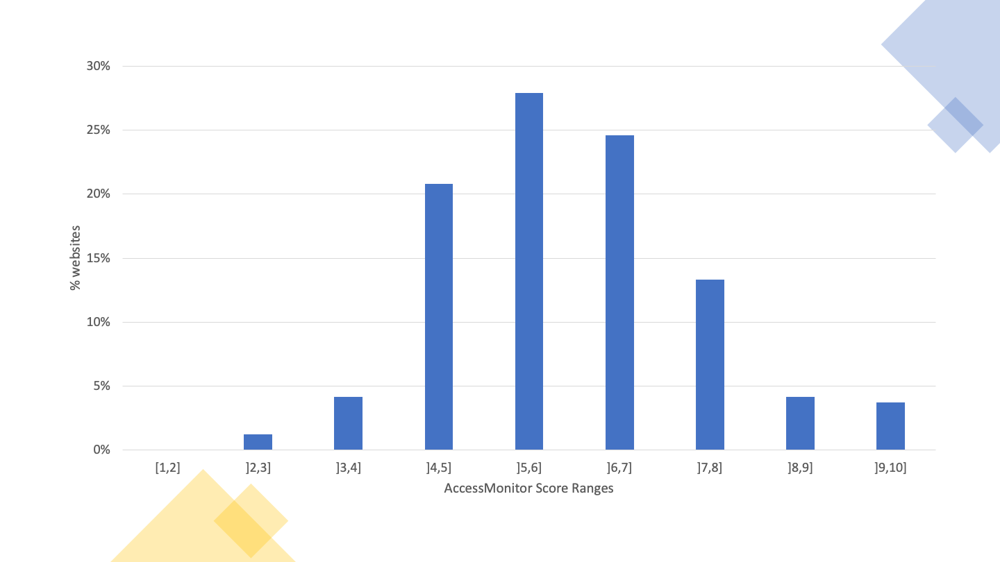
The distribution of the scores of the 240 websites is presented in Table 20. From the table we can observe that the 50% percentile is in the range of scores from 5 to 6 (inclusive).
| Range of scores | Frequency (number of websites) | Accumulated frequency (number of websites) | Frequency (% of websites) | Accumulated frequency (%) |
|---|---|---|---|---|
| [1,2] | 0 | 0 | 0% | 0% |
| ]2,3] | 3 | 3 | 1.3% | 1.3% |
| ]3,4] | 10 | 13 | 4.2% | 5.4% |
| ]4,5] | 50 | 63 | 20.8% | 26.3% |
| ]5,6] | 67 | 130 | 27.9% | 54.2% |
| ]6,7] | 59 | 189 | 24.6% | 78.8% |
| ]7,8] | 32 | 221 | 13.3% | 92.1% |
| ]8,9] | 10 | 231 | 4.2% | 96.3% |
| ]9,10] | 9 | 240 | 3.8% | 100% |
The distribution of the 19,931 evaluated pages of the 240 websites is presented in Graph 09. From the graph we can observe that the range of scores from 6 to 7 (inclusive) contains the highest concentration of pages. Additionally, only 41 pages, corresponding to 0.2% of the sample, have a score of 10.
Note: if you are unable to consult the following chart for any reason, see the data in Table 21.
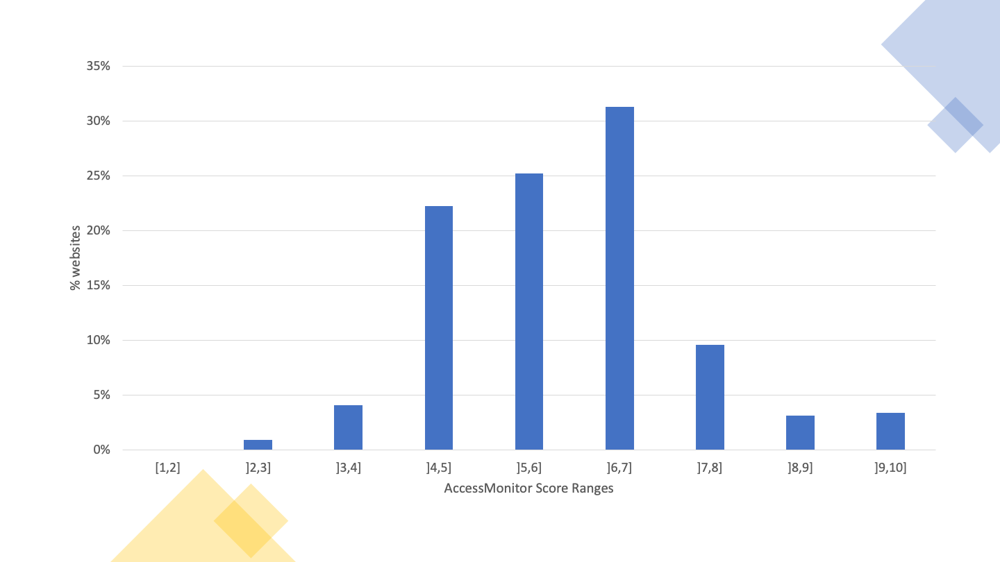
The distribution of the 19,931 pages of the 240 websites is presented in Table 21. From the table we can observe that the 50% percentile is in the range of scores from 5 to 6 (inclusive) despite the mode being the range from 6 to 7 (inclusive) with 31.3% of the pages.
| Range of scores | Frequency (number of pages) | Accumulated frequency (number) | Frequency (% of pages) | Accumulated frequency (%) |
|---|---|---|---|---|
| [1,2] | 0 | 0 | 0% | 0% |
| ]2,3] | 190 | 190 | 1% | 1% |
| ]3,4] | 817 | 1007 | 4.1% | 5.1% |
| ]4,5] | 4435 | 5442 | 22.3% | 27.3% |
| ]5,6] | 5033 | 10475 | 25.3% | 52.6% |
| ]6,7] | 6241 | 16716 | 31.3% | 83.9% |
| ]7,8] | 1911 | 18627 | 9.6% | 93.5% |
| ]8,9] | 626 | 19253 | 3.1% | 96.6% |
| ]9,10] | 678 | 19931 | 3.4% | 100.0% |
In the 2K sample, of the 281 websites, 281,706 pages were collected, corresponding to an average of 1003 pages per website. The Graph 10 presents the distribution of the number of pages per website. 30% of sites have more than 1750 pages. At the opposite end, 33% has less than 250 pages.
Note: if you are unable to consult the following chart for any reason, see the data in Table 22.
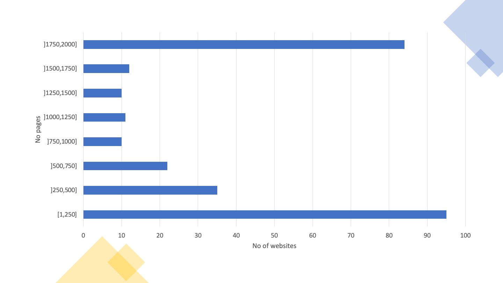
Table 22 provides details on the distribution of the number of pages per website in this sample.
| Page ranges | Frequency (number of websites) | Accumulated frequency | Frequency (% of websites) | Accumulated frequency (%) |
|---|---|---|---|---|
| [1,250] | 95 | 95 | 34.1% | 34.1% |
| ]250,500] | 35 | 130 | 12.5% | 46.6% |
| ]500,750] | 22 | 152 | 7.9% | 54.5% |
| ]750,1000] | 10 | 162 | 3.6% | 58.1% |
| ]1000,1250] | 11 | 173 | 3.9% | 62.0% |
| ]1250,1500] | 10 | 183 | 3.6% | 65.6% |
| ]1500,1750] | 12 | 195 | 4.3% | 69.9% |
| ]1750,2000] | 84 | 279 | 30.1% | 100.0% |
Of the 281 websites, 2 failed the requirement to have at least one page evaluated, and 24 failed to have at least 10 pages with 100 or more elements evaluated, so they are not considered in the analysis below. Thus, for this analysis only 255 websites with at least 10 pages evaluated with 100 or more HTML elements are considered. In total, in this sample, 223,331 pages were evaluated.
The number (and percentage) of websites verifying or violating each clause of EN 301 549 is displayed in Table 23, as well as those requiring manual validation or not applicable on any page of the website.
| Clause EN 301 549 | WCAG Compliance Level | Non-conforming | Needing Manual Validation | Not Applicable |
|---|---|---|---|---|
| 9.1.1.1 Non-text Content | A | 209 (82.0%) | 0 (0%) | 0 (0%) |
| 9.1.2.1 Audio-only and Video-only (prerecorded) | A | 0 (0%) | 55 (21.6%) | 200 (78.4%) |
| 9.1.2.2 Captions (prerecorded) | A | 0 (0%) | 55 (21.6%) | 200 (78.4%) |
| 9.1.2.3 Audio Description or Media Alternative (prerecorded) | A | 0 (0%) | 55 (21.6%) | 200 (78.4%) |
| 9.1.3.1 Info and Relationships | A | 214 (83.9%) | 0 (0%) | 1 (0.4%) |
| 9.1.4.2 Audio Control | A | 0 (0%) | 9 (3.5%) | 246 (96.5%) |
| 9.2.1.1 Keyboard | A | 33 (12.9%) | 0 (0%) | 139 (54.5%) |
| 9.2.2.1 Timing Adjustable | A | 5 (2.0%) | 0 (0%) | 228 (89.4%) |
| 9.2.4.1 Bypass Blocks | A | 0 (0%) | 199 (78.0%) | 0 (0%) |
| 9.2.4.2 Page Titled | A | 19 (7.5%) | 0 (0%) | 0 (0%) |
| 9.2.4.4 Link Purpose | A | 243 (95.3%) | 11 (4.3%) | 0 (0%) |
| 9.2.5.3 Label in Name | A | 45 (17.6%) | 0 (0%) | 126 (49.4%) |
| 9.3.1.1 Language of Page | A | 72 (28.2%) | 0 (0%) | 0 (0%) |
| 9.3.3.1 Error Identification | A | 0 (0%) | 249 (97.6%) | 6 (2.4%) |
| 9.4.1.1 Parsing | A | 202 (79.2%) | 0 (0%) | 0 (0%) |
| 9.4.1.2 Name, Role, Value | A | 253 (99.2%) | 1 (0.4%) | 0 (0%) |
| 9.1.2.5 Audio Description (prerecorded) | AA | 0 (0%) | 55 (21.6%) | 200 (78.4%) |
| 9.1.3.4 Orientation | AA | 0 (0%) | 0 (0%) | 255 (100.0%) |
| 9.1.3.5 Identify Input Purpose | AA | 3 (1.2%) | 0 (0%) | 144 (56.5%) |
| 9.1.4.3 Contrast (Minimum) | AA | 242 (94.9%) | 6 (2.4%) | 0 (0%) |
| 9.1.4.4 Resise text | AA | 77 (30.2%) | 172 (67.5%) | 2 (0.8%) |
| 9.3.1.2 Language of Parts | AA | 3 (1.2%) | 0 (0%) | 132 (51.8%) |
From Table 23 we can conclude that there was a low compliance rate compared to the tested clauses.
The clauses with the highest index of non-compliance were:
Two analyses were carried out in relation to these statements:
The Table 24 presents the results obtained in the first analysis, in which only the clauses of the primary relationships were considered.
| Functional Performance Statement | Infringing | Needing Manual Validation | Not Applicable |
|---|---|---|---|
| Usage without vision (WV) | 255 (100.0%) | 0 (0%) | 0 (0%) |
| Usage with limited vision (LV) | 254 (99.6%) | 1 (0.4%) | 0 (0%) |
| Usage without perception of colour (WPC) | 242 (94.9%) | 13 (5.1%) | 0 (0%) |
| Usage without hearing (WH) | 230 (90.2%) | 13 (5.1%) | 0 (0%) |
| Usage with limited hearing (LH) | 127 (49.8%) | 22 (8.6%) | 104 (40.8%) |
| Usage with limited manipulation or strength (LMS) | 255 (100.0%) | 0 (0%) | 0 (0%) |
| Usage with limited reach (LR) | 45 (17.6%) | 0 (0%) | 126 (49.4%) |
| Usage with limited cognition, language or learning (LC) | 254 (99.6%) | 1 (0.4%) | 0 (0%) |
Observing the Table 24, we conclude that there is a great failure rate in relation to functional performance statements, when only the clauses of primary relationships are evaluated. The functional performance statement with the lowest rate of non-compliance was:
The Table 25 presents the results obtained in the second analysis, in which all the clauses of primary and secondary relationships were considered.
| Functional Performance Statement | Infringing | Needing Manual Validation | Not Applicable |
|---|---|---|---|
| Usage without vision (WV) | 255 (100.0%) | 0 (0%) | 0 (0%) |
| Usage with limited vision (LV) | 255 (100.0%) | 0 (0%) | 0 (0%) |
| Usage without perception of colour (WPC) | 242 (94.9%) | 13 (5.1%) | 0 (0%) |
| Usage without hearing (WH) | 235 (92.2%) | 10 (3.9%) | 0 (0%) |
| Usage with limited hearing (LH) | 233 (91.4%) | 12 (4.7%) | 0 (0%) |
| Usage with no or limited vocal capability (WVC) | 254 (99.6%) | 1 (0.4%) | 0 (0%) |
| Usage with limited manipulation or strength (LMS) | 255 (100.0%) | 0 (0%) | 0 (0%) |
| Usage with limited reach (LR) | 45 (17.6%) | 0 (0%) | 126 (49.4%) |
| Usage with limited cognition, language or learning (LC) | 255 (100.0%) | 0 (0%) | 0 (0%) |
| Privacy (P) | 230 (90.2%) | 10 (3.9%) | 0 (0%) |
Observing the Table 25, we can conclude that there is a high index of non-compliance with functional performance statements, when assessing all clauses of EN 301 549. The functional performance statement with the lowest rate of non-compliance was:
The Table 26 displays the number of websites on which each AccessMonitor test is true, as well as the type of practice (good or bad practice) that the test validates. From the analysis of Table 26 we can verify that of the 12 good practices analysed, two are checked on only one website (“I identified X cases where redundant event handlers are used” and “I located in the metadata of the page X elements that can be used to build a navigation system”). On the other hand, of the 28 bad practices, they all occur on more than one website. The average of websites following each good practice is 56%, while the average of websites applying each bad practice is 46%.
| Assertion | Number of websites | Type of practice |
|---|---|---|
| I noticed that all images on the page have the necessary alternative equivalent in text. | 218 | Good practice |
| I found X images on the page that do not have the necessary alternative equivalent in text. | 205 | Bad practice |
| I found X images on the page with alt=” (alt null). | 240 | To validate manually |
| I found X images on the page with alt that does not serve as an alternative equivalent. | 127 | Bad practice |
| I found X images on the page where alt has more than 100 characters. | 122 | To validate manually |
I found that all <area> active page image maps make use of the alt attribute. |
21 | Good practice |
I found X elements <area> No attribute alt or with alt=”. |
48 | Bad practice |
| I noticed that all graphic buttons on the page make use of the alt attribute. | 32 | Good practice |
| I‘ve located X graphic buttons on the page that doesn’t have the alt attribute. | 20 | Bad practice |
| I found X links whose content is empty. Or rather, it is composed of only one image and the image has an empty character as an alternative textual equivalent (i.e. alt=“). | 207 | Bad practice |
| I have identified X cases where the title attribute of the link element is limited to repeating the text in the link. | 196 | Bad practice |
| I found X groups of links with the same text but whose destination is different. | 250 | To validate manually |
| I noticed that the first link of the page allows us to jump to the main content. | 91 | To validate manually |
| I noticed that the first link of the page does not allow to jump directly to the main content area. | 223 | Bad practice |
| I found X links to bypass content blocks. | 203 | To validate manually |
| I found X headers on the page. | 252 | To validate manually |
I did not find a main header <H1> on this page it’s marked. |
172 | Bad practice |
I located X occurrences of empty lists or with <li> off the lists. |
177 | Bad practice |
I found X elements <fieldset> off the form. |
40 | Bad practice |
I found X elements <fieldset> No description. |
76 | Bad practice |
I located X elements <label> which are not visible or incorrectly positioned. |
135 | Bad practice |
| I’ve found that all form checks have an accessible name. | 211 | Good practice |
| I found X form controls with no access name. | 171 | To validate manually |
| I found X cases where javascript is used to remove the focus from the field, whenever the field receives the focus. | 93 | Bad practice |
| I noticed that all forms have a button to submit the data to the server. | 205 | Good practice |
| I identified X forms without the button to submit the data to the server. | 152 | Bad practice |
I’ve located X data tables without the <caption> element. |
221 | Bad practice |
I found X tables without identified headers but that use the <caption> element. |
32 | To validate manually |
I found X complex data tables — where multiple rows configure header cells — in which data cells were found to exist without the <headers> attribute. |
102 | Bad practice |
| I found X tables without marked headers. | 211 | Bad practice |
I found X elements <iframe> No title. |
197 | Bad practice |
| I found X abbreviations in which you forgot to put the extension. | 8 | Bad practice |
| I identified X cases where the CSS specifies a line spacing of less than 1.5. | 3 | To validate manually |
| I found X cases where we use justified text via HTML. | 80 | Bad practice |
| I have identified X cases where justified text is used via CSS. | 185 | To validate manually |
| I’ve identified X cases where the font size is expressed in absolute units of measurement. | 69 | Bad practice |
| I identified X cases in the CSS where absolute units of measurement are used to define the width of the contents boxes. | 96 | To validate manually |
| I checked that there are X cases, where the units of measurement that define the width of the content elements existing in HTML are expressed in absolute values. | 228 | To validate manually |
| I checked that there is X case, where the units of measurement that define the width of the content elements existing in HTML are expressed in relative values. | 123 | Good practice |
| I located X color combinations whose contrast ratio is lower than the minimum contrast ratio allowed by WCAG, i.e. 3 to 1 for large letter text and 4.5 to 1 for normal letter text. | 242 | Bad practice |
| I have identified X CSS rules where the color of the letter or background color is not specified. | 114 | To validate manually |
| I’ve identified X cases where redundant event handlers are used. | 1 | Good practice |
| I’ve identified X cases where redundant event handlers are not used. | 98 | Bad practice |
| I’ve identified X cases where event handlers are associated with non-interactive elements. | 64 | Bad practice |
| I asked the W3C HTML validator and found that there are no HTML errors. | 255 | Good practice |
| I found that there are no obsolete elements used for visual control of the presentation. | 253 | Good practice |
| I checked that the main language of the page is marked”X“. | 232 | To validate manually |
| I found that the X attribute is missing. | 70 | Bad practice |
| I checked that the main language of the page is incorrectly marked. “X” exists? | 6 | Bad practice |
I noticed that this page is untitled — you lack the <title> element. |
6 | Bad practice |
I noticed that this page has no title — the <title> element; it’s empty. |
13 | Bad practice |
| I found a title on the page and it seems right to me. | 255 | Good practice |
| It seems to me that the page title is too large — it contains X characters. | 173 | To validate manually |
I found in the metadata of page X elements <link> which could be used to build a navigation system.. |
1 | Good practice |
I found that the page will automatically restart through the <meta http-equiv=“refresh”> element. |
4 | To validate manually |
I found that the page is automatically redirected through the <meta http-equiv=“redirect”> element. |
1 | To validate manually |
| I noticed that all headers on this page have an accessible name | 250 | Good practice |
The Table 27 displays the number of websites that pass, fail and require manual validation at least once by ACT rule tested. From the analysis of Table 27 we can verify that 33 ACT rules passed at least once and 28 ACT rules failed at least once in the entire 2K sample. Six ACT rules were found that fail in more websites than those in which they pass, these being the same 6 rules in which this was found in the Home+ sample:
If we do not consider the rule “First focusable element is link to non-repeated content” due to the above reasons, we can see the same four types of problems: (1) lack of accessible names in HTML elements, (2) incorrect use of ARIA, (3) incorrect attribution of focus to iframes, and (4) use of colours with insufficient contrast.
Some of the rules have a zero in all columns. This means that no pages were found in the sample where the rule was applicable.
| ACT rules | Pass | Fail | Need manual validation |
|---|---|---|---|
| Orientation of the page is not restricted using CSS transform property | 0 | 0 | 0 |
| iframe elements with identical accessible names have equivalent purpose | 0 | 0 | 36 |
| Button has non-empty accessible name | 237 | 71 | 0 |
| Link has non-empty accessible name | 186 | 243 | 0 |
| Element with aria-hidden has no focusable content | 201 | 73 | 0 |
| meta viewport allows for zoom | 191 | 77 | 0 |
| audio or video avoids automatically playing audio | 0 | 0 | 9 |
| ID attribute value is unique | 225 | 202 | 0 |
| role attribute has valid value | 215 | 69 | 0 |
| SVG element with explicit role has non-empty accessible name | 34 | 2 | 0 |
| Element with lang attribute has valid language tag | 123 | 3 | 0 |
| video element visual content has accessible alternative | 0 | 0 | 55 |
| autocomplete attribute has valid value | 111 | 3 | 0 |
| Aria state or property is permitted | 217 | 84 | 0 |
| video element auditory content has accessible alternative | 0 | 0 | 55 |
| aria-* attribute is defined in WAI-ARIA | 237 | 3 | 0 |
| Element with role attribute has required states and properties | 224 | 27 | 0 |
| audio element content has text alternative | 0 | 0 | 1 |
| Visible label is part of accessible name | 99 | 45 | 0 |
| video element visual-only content has accessible alternative | 0 | 0 | 55 |
| video element visual content has strict accessible alternative | 0 | 0 | 55 |
| Aria required context role | 63 | 70 | 0 |
| Aria state or property has valid value | 229 | 11 | 0 |
| headers attribute specified on a cell refers to cells in the same table element | 17 | 5 | 0 |
| Aria required owned elements | 61 | 92 | 0 |
| Table header cell has assigned cells | 120 | 31 | 0 |
| Zoomed text node is not clipped with CSS overflow | 0 | 0 | 248 |
| Error message describes invalid form field value | 0 | 0 | 249 |
| Object element rendering non-text content has non-empty accessible name | 0 | 12 | 0 |
| Scrollable element is keyboard accessible | 98 | 33 | 0 |
| Links with identical accessible names and context serves equivalent purpose | 173 | 0 | 237 |
| Element marked as decorative is not exposed | 237 | 99 | 0 |
| Audio or video that plays automatically has no audio that lasts more than 3 seconds | 0 | 0 | 9 |
| audio or video that plays automatically has a control mechanism | 0 | 0 | 9 |
| video element visual-only content is media alternative for text | 0 | 0 | 55 |
| video element visual-only content has description track | 0 | 0 | 0 |
| video element visual-only content has transcript | 0 | 0 | 55 |
| video element visual-only content has audio track alternative | 0 | 0 | 55 |
| video element visual content has audio description | 0 | 0 | 55 |
| video element content is media alternative for text | 0 | 0 | 55 |
| video element visual content has description track | 0 | 0 | 55 |
| audio element content has transcript | 0 | 0 | 1 |
| audio element content is media alternative for text | 0 | 0 | 1 |
| video element auditory content has captions | 0 | 0 | 55 |
| Audio and visuals of video element have transcript | 0 | 0 | 55 |
| Element in sequential focus order has visible focus | 0 | 0 | 255 |
| Document has a landmark with non-repeated content | 136 | 0 | 224 |
| Document has heading for non-repeated content | 136 | 0 | 224 |
| Element with presentational children has no focusable content | 253 | 37 | 0 |
| MenuItem has non-empty accessible name | 18 | 6 | 0 |
| Letter spacing in style attributes is not!important | 128 | 1 | 0 |
| Word spacing in style attributes is not!important | 66 | 0 | 0 |
| iframe with negative tabindex has no interactive elements | 22 | 86 | 0 |
| meta element has no refresh delay (no exception) | 22 | 5 | 0 |
| First focusable element is link to non-repeated content | 0 | 233 | 22 |
| Block of repeated content is collapsible | 136 | 0 | 224 |
| Document has an instrument to move focus to non-repeated content | 136 | 0 | 224 |
| Bypass Blocks of Repeated Content | 215 | 0 | 199 |
The Table 28 displays the number of pages on which each AccessMonitor test is checked, as well as the type of practice that the test validates. By analysing the Table 28 we can verify that all good practices and all bad practices have been detected on at least one page. Of the 11 good practices analysed, all are checked on at least 5 pages. Of the 28 bad practices all occur in at least 30 pages. The average of pages that follow each good practice is 44%, while the average of pages that apply each bad practice is 18%.
The good practice applied by more pages is “I found a title on the page, and it seems me correct”, applied to 99.3% of the pages. The least applied good practice is “I’ve Identify X cases in which redundant event handlers are used”, applied in only 5 pages.
The bad practice applied on more pages is “I located X colour combinations whose contrast ratio is lower than the minimum contrast ratio allowed by WCAG (i.e. 3 to 1 for text with large letter and 4.5 for 1 for text with normal letter.”, verified in 72% of pages. The bad practice found in fewer pages is “I found X abbreviations in which you forgot to put the extension”, verified in 0.01% of the pages.
| Assertion | Number of pages | Type of practice |
|---|---|---|
| I noticed that all images on the page have the necessary alternative equivalent in text. | 166184 | Good practice |
| I found X images on the page that do not have the necessary alternative equivalent in text. | 53125 | Bad practice |
| I found X images on the page with alt=” (alt null). | 98620 | To validate manually |
| I found X images on the page with alt that does not serve as an alternative equivalent. | 11463 | Bad practice |
| I found X images on the page where alt has more than 100 characters. | 12035 | To validate manually |
| I found that all active page image maps make use of the alt attribute. | 1376 | Good practice |
| I found X elements No attribute alt or with alt=”. | 1609 | Bad practice |
| I noticed that all graphic buttons on the page make use of the alt attribute. | 27591 | Good practice |
| I‘ve located X graphic buttons on the page that doesn’t have the alt attribute. | 1155 | Bad practice |
| I found X links whose content is empty. Or rather, it is composed of only one image and the image has an empty character as an alternative textual equivalent (i.e. alt=“). | 65081 | Bad practice |
| I have identified X cases where the title attribute of the link element is limited to repeating the text in the link. | 116078 | Bad practice |
| I found X groups of links with the same text but whose destination is different. | 128555 | To validate manually |
| I noticed that the first link of the page allows us to jump to the main content. | 64891 | To validate manually |
| I noticed that the first link of the page does not allow to jump directly to the main content area. | 158442 | Bad practice |
| I found X links to bypass content blocks. | 136622 | To validate manually |
| I found X headers on the page. | 212994 | To validate manually |
I did not find a main header <H1> on this page it’s marked. |
43060 | Bad practice |
I located X occurrences of empty lists or with <li> off the lists. |
38817 | Bad practice |
I found X elements <fieldset> off the form. |
10133 | Bad practice |
I found X elements <fieldset> No description. |
8870 | Bad practice |
I located X elements <label> which are not visible or incorrectly positioned. |
65204 | Bad practice |
| I’ve found that all form checks have an accessible name. | 120360 | Good practice |
| I found X form controls with no access name. | 33684 | To validate manually |
| I found X cases where javascript is used to remove the focus from the field, whenever the field receives the focus. | 22892 | Bad practice |
| I noticed that all forms have a button to submit the data to the server. | 134286 | Good practice |
| I identified X forms without the button to submit the data to the server. | 52573 | Bad practice |
I’ve located X data tables without the <caption> element. |
70883 | Bad practice |
I found X tables without identified headers but that use the <caption> element. |
2193 | To validate manually |
I found X complex data tables — where multiple rows configure header cells — in which data cells were found to exist without the <headers> attribute. |
22437 | Bad practice |
| I found X tables without marked headers. | 61032 | Bad practice |
I found X elements <iframe> No title. |
23862 | Bad practice |
| I found X abbreviations in which you forgot to put the extension. | 30 | Bad practice |
| I identified X cases where the CSS specifies a line spacing of less than 1.5. | 166 | To validate manually |
| I found X cases where we use justified text via HTML. | 1731 | Bad practice |
| I have identified X cases where justified text is used via CSS. | 43765 | To validate manually |
| I’ve identified X cases where the font size is expressed in absolute units of measurement. | 42197 | Bad practice |
| I identified X cases in the CSS where absolute units of measurement are used to define the width of the contents boxes. | 48951 | To validate manually |
| I checked that there are X cases, where the units of measurement that define the width of the content elements existing in HTML are expressed in absolute values. | 52796 | To validate manually |
| I checked that there is X case, where the units of measurement that define the width of the content elements existing in HTML are expressed in relative values. | 17147 | Good practice |
| I located X color combinations whose contrast ratio is lower than the minimum contrast ratio allowed by WCAG, i.e. 3 to 1 for large letter text and 4.5 to 1 for normal letter text. | 160985 | Bad practice |
| I have identified X CSS rules where the color of the letter or background color is not specified. | 39852 | To validate manually |
| I’ve identified X cases where redundant event handlers are used. | 5 | Good practice |
| I’ve identified X cases where redundant event handlers are not used. | 28517 | Bad practice |
| I’ve identified X cases where event handlers are associated with non-interactive elements. | 11737 | Bad practice |
| I found that there are no obsolete elements used for visual control of the presentation. | 214197 | Good practice |
| I checked that the main language of the page is marked”X“. | 204711 | To validate manually |
| I found that the X attribute is missing. | 18622 | Bad practice |
| I checked that the main language of the page is incorrectly marked. “X” exists? | 482 | Bad practice |
I noticed that this page is untitled — you lack the <title> element. |
91 | Bad practice |
I noticed that this page has no title — the <title> element; it’s empty. |
1458 | Bad practice |
| I found a title on the page and it seems right to me. | 221784 | Good practice |
| It seems to me that the page title is too large — it contains X characters. | 15411 | To validate manually |
I found in the metadata of page X elements <link> which could be used to build a navigation system.. |
8 | Good practice |
I found that the page will automatically restart through the <meta http-equiv=“refresh”>” element. |
1547 | To validate manually |
I found that the page is automatically redirected through the <meta http-equiv=“redirect”> element. |
1 | To validate manually |
| I noticed that all headers on this page have an accessible name. | 186303 | Good practice |
The Table 29 displays the number of pages that pass, fail and require manual validation by ACT rule tested. By analysing the Table 29, we can verify that 33 ACT rules passed at least once and 28 ACT rules failed at least once. Five ACT rules have been found that fail on more pages than those in which they pass:
Continuing not to consider the rule “First focusable element is link to non-repeated content” due to the reasons presented above, we can verify that we are in the presence of three types of problems: (1) lack of accessible names in HTML elements, (2) incorrect attribution of focus to iframes, and (3) use of colours with insufficient contrast.
| ACT rules | Number passing | No. that fail | No. requiring manual validation |
|---|---|---|---|
| Orientation of the page is not restricted using CSS transform property | 0 | 0 | 0 |
| iframe elements with identical accessible names have equivalent purpose | 0 | 0 | 179 |
| Button has non-empty accessible name | 151452 | 17888 | 0 |
| Link has non-empty accessible name | 100878 | 122392 | 0 |
| Element with aria-hidden has no focusable content | 106321 | 10044 | 0 |
| meta viewport allows for zoom | 153320 | 39199 | 0 |
| audio or video avoids automatically playing audio | 0 | 0 | 32 |
| ID attribute value is unique | 161006 | 61962 | 0 |
| role attribute has valid value | 137089 | 6814 | 0 |
| SVG element with explicit role has non-empty accessible name | 16479 | 2078 | 0 |
| Element with lang attribute has valid language tag | 22182 | 4 | 0 |
| video element visual content has accessible alternative | 0 | 0 | 1037 |
| autocomplete attribute has valid value | 28937 | 263 | 0 |
| Aria state or property is permitted | 122192 | 13195 | 0 |
| video element auditory content has accessible alternative | 0 | 0 | 1037 |
| aria-* attribute is defined in WAI-ARIA | 169517 | 19 | 0 |
| Element with role attribute has required states and properties | 137092 | 452 | 0 |
| audio element content has text alternative | 0 | 0 | 10 |
| Visible label is part of accessible name | 16116 | 18510 | 0 |
| video element visual-only content has accessible alternative | 0 | 0 | 1037 |
| video element visual content has strict accessible alternative | 0 | 0 | 1037 |
| Aria required context role | 10501 | 8967 | 0 |
| Aria state or property has valid value | 135242 | 144 | 0 |
| headers attribute specified on a cell refers to cells in the same table element | 610 | 315 | 0 |
| Aria required owned elements | 10834 | 7218 | 0 |
| Table header cell has assigned cells | 12252 | 1939 | 0 |
| Zoomed text node is not clipped with CSS overflow | 0 | 0 | 187516 |
| Error message describes invalid form field value | 0 | 0 | 195831 |
| Object element rendering non-text content has non-empty accessible name | 0 | 1878 | 0 |
| Scrollable element is keyboard accessible | 29550 | 2192 | 0 |
| Links with identical accessible names and context serves equivalent purpose | 24129 | 0 | 50732 |
| Element marked as decorative is not exposed | 125040 | 6245 | 0 |
| Audio or video that plays automatically has no audio that lasts more than 3 seconds | 0 | 0 | 32 |
| audio or video that plays automatically has a control mechanism | 0 | 0 | 32 |
| video element visual-only content is media alternative for text | 0 | 0 | 1037 |
| video element visual-only content has description track | 0 | 0 | 0 |
| video element visual-only content has transcript | 0 | 0 | 1037 |
| video element visual-only content has audio track alternative | 0 | 0 | 1037 |
| video element visual content has audio description | 0 | 0 | 1037 |
| video element content is media alternative for text | 0 | 0 | 1037 |
| video element visual content has description track | 0 | 0 | 1037 |
| audio element content has transcript | 0 | 0 | 10 |
| audio element content is media alternative for text | 0 | 0 | 10 |
| video element auditory content has captions | 0 | 0 | 1037 |
| Audio and visuals of video element have transcript | 0 | 0 | 1037 |
| Element in sequential focus order has visible focus | 0 | 0 | 223291 |
| Document has a landmark with non-repeated content | 39351 | 0 | 183982 |
| Document has heading for non-repeated content | 39351 | 0 | 183982 |
| Element with presentational children has no focusable content | 219007 | 4154 | 0 |
| MenuItem has non-empty accessible name | 7608 | 6078 | 0 |
| Letter spacing in style attributes is not!important | 22573 | 4 | 0 |
| Word spacing in style attributes is not!important | 828 | 0 | 0 |
| iframe with negative tabindex has no interactive elements | 3624 | 5298 | 0 |
| meta element has no refresh delay (no exception) | 7966 | 1548 | 0 |
| First focusable element is link to non-repeated content | 0 | 169562 | 53771 |
| Block of repeated content is collapsible | 39351 | 0 | 183982 |
| Document has an instrument to move focus to non-repeated content | 39351 | 0 | 183982 |
| Bypass Blocks of Repeated Content | 70298 | 0 | 153034 |
The distribution of the AccessMonitor Scores on the 255 websites of the sample 2k is presented in Graph 11. From the graph we can observe that the range of scores ]5,6] contains the highest concentration of sites (30%). It should also be noted that 78% of websites have an AccessMonitor Score of more than 5 — this on a scale of 1 to 10. From the data collected we can also see that of the 8 sites in the scoring range ]9,10] there are only one site with a score of 10.
Note: if you are unable to consult the following chart for any reason, see the data in Table 30.
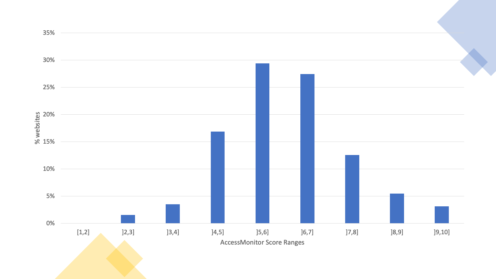
The distribution of the scores of the 255 websites is presented in Table 30. From the table we can observe that the 50% percentile is in the range of scores from 5 to 6 (inclusive).
| Range of scores | Frequency (number of pages) | Accumulated frequency (number) | Frequency (% of pages) | Accumulated frequency (%) |
|---|---|---|---|---|
| [1,2] | 0 | 0 | 0% | 0% |
| ]2,3] | 4 | 4 | 1.6% | 1.6% |
| ]3,4] | 9 | 13 | 3.5% | 5.1% |
| ]4,5] | 43 | 56 | 16.9% | 22% |
| ]5,6] | 75 | 131 | 29.4% | 51.4% |
| ]6,7] | 70 | 201 | 27.5% | 78.8% |
| ]7,8] | 32 | 233 | 12.5% | 91.4% |
| ]8,9] | 14 | 247 | 5.5% | 96.9% |
| ]9,10] | 8 | 255 | 3.2% | 100.0% |
The distribution of the scores of the 223,331 pages evaluated of the 255 websites is presented in Graph 12. From the graph we can observe that the range of scores from 5 to 6 (inclusive) contains the highest concentration of pages. Additionally, only 44 pages, corresponding to 0.0018% of the sample, have a score of 10.
Note: if you are unable to consult the following chart for any reason, see the data in Table 31.
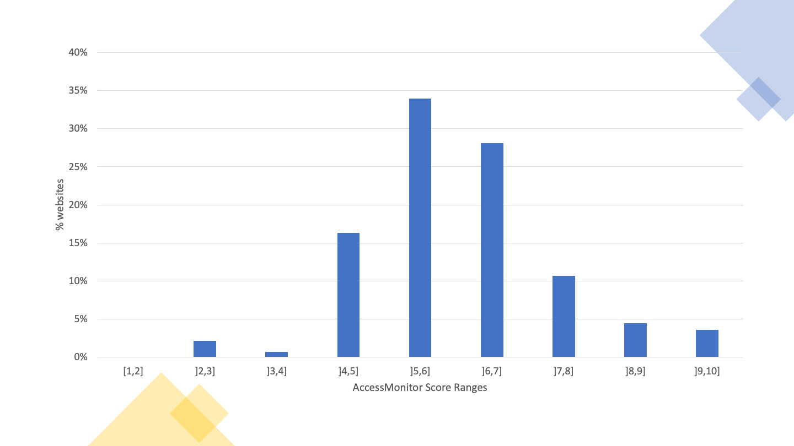
The distribution of the scores of the 223,331 pages of the 255 websites is presented in Table 31. From the table we can observe that the 50% percentile is in the range of scores from 5 to 6 (inclusive).
| Range of scores | Frequency (number of pages) | Accumulated frequency (number) | Frequency (%) | Accumulated frequency (%) |
|---|---|---|---|---|
| [1,2] | 0 | 0 | 0 % | 0 % |
| ]2,3] | 4845 | 4845 | 2.2 % | 2.2 % |
| ]3,4] | 1592 | 6437 | 0.7 % | 2.9 % |
| ]4,5] | 36502 | 42939 | 16.3 % | 19.2 % |
| ]5,6] | 75878 | 118817 | 34 % | 53.2 % |
| ]6,7] | 62803 | 181620 | 28.1 % | 81.3 % |
| ]7,8] | 23796 | 205416 | 10.7 % | 92 % |
| ]8,9] | 9932 | 215348 | 4.4 % | 96.4 % |
| ]9,10] | 7983 | 223331 | 3.6 % | 100 % |
The simplified monitoring method identified the most frequent non-compliances with the clauses of EN 301 549 that can be assessed with the automated tools that have been used. The non-compliances that stand out:
The 2K sample, compared to the Home+ sample, shows that problems are even more frequent when extending the number of pages (the default rate for all problematic clauses grows in sample 2K). Several EN clauses show significant growth in the rate of non-compliance when considering the 2K sample. For example, 72% of the websites in the Home+ sample do not comply with the clause “9.1.1.1 Non-text content” while the percentage rises to 82% in the 2K sample. In clause “9.1.3.1 Info and relationship” the evolution is from 75% to 84%. The “9.2.1.1 Keyboard” increases from 8% to 13%. In “9.2.4.4 Link Purpose (in context)” rises from 89% to 95%. In “9.3.1.1 Language of the page” increases from 20% to 28%. In “9.4.1.1 Parsing” rises from 70% to 79%. The Home+ sample detects the diversity of the problems, but with a lower incidence rate. It does not provide a realistic coverage of the problems related to several clauses. This may be a result of the teams managing the websites paying more attention to the pages that are closer to the top of the hierarchy of the site because they are probably more visited. However, if this is the case, it is not a justification for not paying the same level of attention to all pages made available on the website. However, this logic does not hold for all the accessibility principles analysed. The average compliance of the Understandable principle shows that non-conformities detected are more easily diluted in larger samples such as 2K.
We remind you that the Home+ sample is the one used in the Portuguese Web Accessibility Observatory and that the logic of correcting the occurrences found should be applied not only to the sample but, in a cross-sectional way, to the entire website.
The results described in this section refer to the analysis of 24 websites. In total, 477 pages were analysed, corresponding to an average of 20 pages per website.
The Table 32 displays the number (and percentage) of websites verifying or violating each clause of EN 301 549 as well as those that do not apply to any page of the website.
| Clause EN 301 549 | WCAG Level | Conforming | Non-compliant | Not applicable |
|---|---|---|---|---|
| 9.1.1.1 Non-text Content | A | 0 (0%) | 24 (100%) | 0 (0%) |
| 9.1.2.1 Audio-only and Video-only (Pre-recorded) | A | 0 (0%) | 8 (33%) | 16 (67%) |
| 9.1.2.2 Captions (Pre-recorded) | A | 0 (0%) | 7 (29%) | 17 (71%) |
| 9.1.2.3 Audio Description or Media Alternative (Pre-recorded) | A | 0 (0%) | 6 (25%) | 18 (75%) |
| 9.1.2.5 Audio Description (Pre-recorded) | AA | 0 (0%) | 7 (29%) | 17 (71%) |
| 9.1.3.1 Info and Relationships | A | 0 (0%) | 24 (100%) | 0 (0%) |
| 9.1.3.2 Meaningful Sequence | A | 7 (29%) | 17 (71%) | 0 (0%) |
| 9.1.3.3 Sensory Characteristics | A | 8 (33%) | 2 (8%) | 14 (58%) |
| 9.1.3.4 Orientation | AA | 23 (96%) | 1 (4%) | 0 (0%) |
| 9.1.3.5 Identify Input Purpose | AA | 1 (4%) | 18 (75%) | 5 (21%) |
| 9.1.4.1 Use of Colour | A | 3 (13%) | 10 (42%) | 11 (46%) |
| 9.1.4.2 Audio Control | A | 0 (0%) | 2 (8%) | 22 (92%) |
| 9.1.4.3 Contrast (Minimum) | AA | 4 (17%) | 20 (83%) | 0 (0%) |
| 9.1.4.4 Resise Text | AA | 13 (54%) | 11 (46%) | 0 (0%) |
| 9.1.4.5 Images of Text | AA | 2 (8%) | 14 (58%) | 8 (33%) |
| 9.1.4.10 Reflow | AA | 1 (4%) | 23 (96%) | 0 (0%) |
| 9.1.4.11 Non-Text Contrast | AA | 3 (13%) | 21 (88%) | 0 (0%) |
| 9.1.4.12 Text Spacing | AA | 10 (42%) | 14 (58%) | 0 (0%) |
| 9.1.4.13 Content on Hover or Focus | AA | 7 (29%) | 7 (29%) | 10 (42%) |
| 9.2.1.1 Keyboard | A | 6 (25%) | 18 (75%) | 0 (0%) |
| 9.2.1.2 In Keyboard Trap | A | 23 (96%) | 1 (4%) | 0 (0%) |
| 9.2.1.4 Character Key Shortcuts | A | 2 (8%) | 1 (4%) | 21 (88%) |
| 9.2.2.1 Timing Adjustable | A | 1 (4%) | 6 (25%) | 17 (71%) |
| 9.2.2.2 Pause, Stop, Hide | A | 2 (8%) | 12 (50%) | 10 (42%) |
| 9.2.3.1 Three Flashes or Below | A | 1 (4%) | 0 (0%) | 23 (96%) |
| 9.2.4.1 Bypass Blocks | A | 7 (29%) | 15 (63%) | 2 (8%) |
| 9.2.4.2 Page Titled | A | 8 (33%) | 16 (67%) | 0 (0%) |
| 9.2.4.3 Focus Order | A | 7 (29%) | 17 (71%) | 0 (0%) |
| 9.2.4.4 Link Purpose (In Context) | A | 1 (4%) | 23 (96%) | 0 (0%) |
| 9.2.4.5 Multiple Ways | AA | 10 (42%) | 12 (50%) | 2 (8%) |
| 9.2.4.6 Headings and Labels | AA | 16 (67%) | 8 (33%) | 0 (0%) |
| 9.2.4.7 Focus Visible | AA | 8 (33%) | 16 (67%) | 0 (0%) |
| 9.2.5.1 Pointer Gestures | A | 5 (21%) | 1 (4%) | 18 (75%) |
| 9.2.5.2 Pointer Cancellation | A | 23 (96%) | 0 (0%) | 1 (4%) |
| 9.2.5.3 Label in Name | A | 8 (33%) | 16 (67%) | 0 (0%) |
| 9.2.5.4 Motion Actuation | A | 0 (0%) | 0 (0%) | 24 (100%) |
| 9.3.1.1 Language of Page | A | 11 (46%) | 13 (54%) | 0 (0%) |
| 9.3.1.2 Language of Parts | AA | 2 (8%) | 9 (38%) | 13 (54%) |
| 9.3.2.1 On Focus | A | 23 (96%) | 1 (4%) | 0 (0%) |
| 9.3.2.2 On Input | A | 20 (83%) | 1 (4%) | 3 (13%) |
| 9.3.2.3 Consistent Navigation | AA | 16 (67%) | 4 (17%) | 4 (17%) |
| 9.3.2.4 Consistent Identification | AA | 14 (58%) | 7 (29%) | 3 (13%) |
| 9.3.3.1 Error Identification | A | 10 (42%) | 2 (8%) | 12 (50%) |
| 9.3.3.2 Labels or Instructions | A | 9 (38%) | 12 (50%) | 3 (13%) |
| 9.3.3.3 Error Suggestion | AA | 7 (29%) | 2 (8%) | 15 (63%) |
| 9.3.3.4 Error Prevention (Legal, Financial, Date) | AA | 9 (38%) | 1 (4%) | 14 (58%) |
| 9.4.1.1 Parsing | A | 0 (0%) | 24 (100%) | 0 (0%) |
| 9.4.1.2 Name, Role, Value | A | 1 (4%) | 22 (92%) | 1 (4%) |
| 9.4.1.3 Status Messages (WCAG 2.1) | AA | 1 (4%) | 6 (25%) | 17 (71%) |
The average non-compliance and compliance rates of the clauses of EN 301 549 applicable to each website are presented in Graph 13 and Graph 14. To facilitate the reading, the clauses corresponding to WCAG level ‘A’ were considered in Graph 13 and the clauses corresponding to WCAG level ‘AA’ were considered in Graph 14. Although the European Standard does not make this division by compliance levels, it proves useful for those who need to make corrections to the practices found. In the logic of WCAG 2.1 it will be rational to begin by eliminating the problems encountered at level ‘A’. A quick observation of both graphs shows us that the non-compliant clauses are around 30% for level ‘A’ and around 40% to 50% for the level ‘AA’ criteria. The number of clauses level ‘A’ is also significantly higher than the clauses expressing the level ‘AA’.
Note: if you are unable to consult the following chart for any reason, see the data in Table 32.
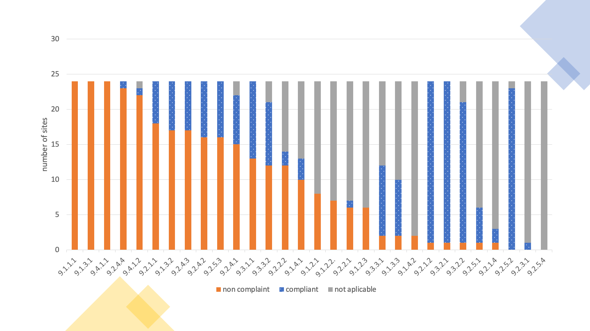
Note: if you are unable to consult the following chart for any reason, see the data in Table 32.
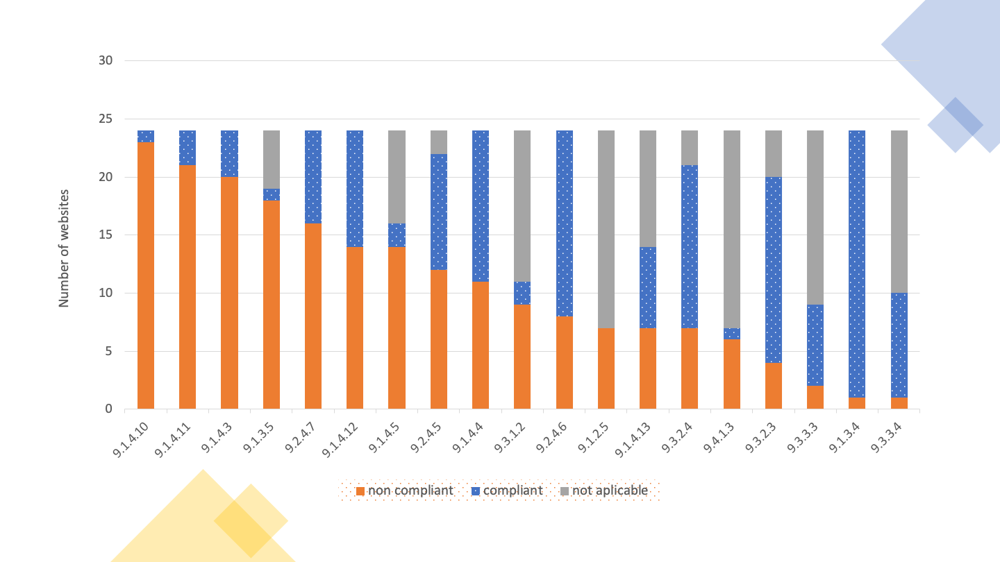
According to the data set out in Table 32, it can be concluded that there was a low compliance rate of the clauses.
The 11 clauses with the highest success rate are:
The remaining clauses achieved a success rate of 78% or less in the applicable websites.
The 11 clauses with the highest failure rate were:
The remaining clauses obtained a failure rate of 95% or less.
Two analyses were carried out in relation to these statements:
For this analysis, all 11 functional performance statements were considered.
Table 33 presents the results obtained in the first analysis, in which only the clauses of the primary relationships were considered. it can be concluded that there was a low compliance rate of the clauses.
The 11 clauses with the highest success rate are:
The remaining clauses achieved a success rate of 78% or less in the applicable websites.
The 11 clauses with the highest failure rate were:
The remaining clauses obtained a failure rate of 95% or less.
| Functional performance statements | Number of conforming | No of non-compliant | No of not applicable |
|---|---|---|---|
| Usage without vision | 0 (0 %) | 24 (100 %) | 0 (0 %) |
| Usage with limited vision | 0 (0 %) | 24 (100 %) | 0 (0 %) |
| Usage without perception of colour | 1 (4 %) | 23 (96 %) | 0 (0 %) |
| Usage without hearing | 1 (4 %) | 23 (96 %) | 0 (0 %) |
| Usage with limited hearing | 1 (4 %) | 18 (75 %) | 5 (21 %) |
| Usage with limited manipulation and strength | 1 (4 %) | 23 (96 %) | 0 (0 %) |
| Usage with limited reach | 5 (21 %) | 19 (79 %) | 0 (0 %) |
| Minimize photosensitive seizure triggers | 1 (4 %) | 6 (25 %) | 17 (71 %) |
| Usage with limited cognition | 0 (0 %) | 24 (100 %) | 0 (0 %) |
Observing the Table 33, we can conclude that there is a great failure rate in relation to functional performance statements, when only the clauses of primary relationships are evaluated. The functional performance statements with the highest success rate were:
The remaining functional performance statements achieved a success rate of 4% or less, with 3 of them having a 0% rate.
The Table 34 presents the results obtained in the first analysis, considering, however, the average compliance rate of the sample analysed.
| Functional performance statement | Number of conforming | No of non-compliant | No of not applicable |
|---|---|---|---|
| Usage without vision | 32% | 41% | 27% |
| Usage with limited vision | 33% | 46% | 21% |
| Usage without perception of colour | 18% | 45% | 37% |
| Usage without hearing | 6% | 34% | 60% |
| Usage with limited hearing | 6% | 22% | 71% |
| Usage with limited manipulation and strength | 40% | 36% | 24% |
| Usage with limited reach | 37% | 15% | 48% |
| Minimize photosensitive seizure triggers | 4% | 13% | 83% |
| Usage with limited cognition | 41% | 35% | 25% |
The average rates of compliance with the clauses of each functional performance statement are presented in Graph 15, considering the primary relationships, representing the current state of the sample analysed.
Note: if you are unable to consult the following chart for any reason, see the data in Table 34.
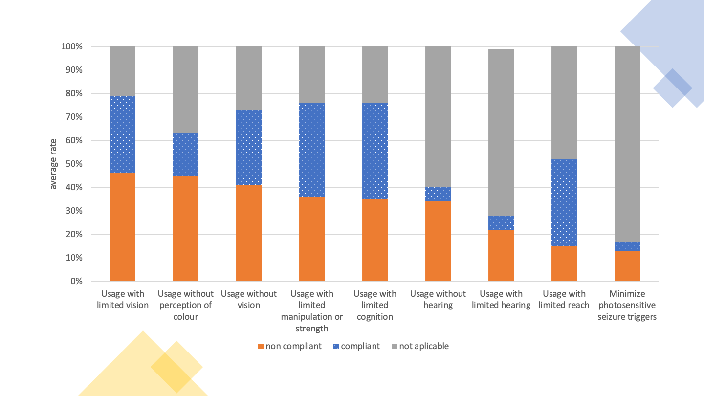
Observing the Table 34 we can conclude that there is a large average failure rate in relation to functional performance statements, when only the clauses of primary relationships are evaluated. The functional performance statements with the highest index of non-compliance are:
The remaining functional performance statements achieved a non-compliance rate of less than 25%.
The Table 35 presents the results obtained in the second analysis, in which all the clauses of primary and secondary relationships were considered.
| Functional performance statement | Number of conforming | No of non-compliant | No of not applicable |
|---|---|---|---|
| Usage without vision | 0 (0 %) | 24 (100 %) | 0 (0 %) |
| Usage with limited vision | 0 (0 %) | 24 (100 %) | 0 (0 %) |
| Usage without perception of colour | 1 (4 %) | 23 (96 %) | 0 (0 %) |
| Usage without hearing | 0 (0 %) | 24 (100 %) | 0 (0 %) |
| Usage with limited hearing | 0 (0 %) | 24 (100 %) | 0 (0 %) |
| Usage without vocal capability | 0 (0 %) | 24 (100 %) | 0 (0 %) |
| Usage with limited manipulation or strength | 0 (0 %) | 24 (100 %) | 0 (0 %) |
| Usage with limited reach | 5 (21 %) | 19 (79 %) | 0 (0 %) |
| Minimize photosensitive seizure triggers | 1 (4 %) | 6 (25 %) | 17 (71 %) |
| Usage with limited cognition | 0 (0 %) | 24 (100 %) | 0 (0 %) |
| Privacy | 0 (0 %) | 24 (100 %) | 0 (0 %) |
Observing the Table 35 we can conclude that there is a great failure rate in relation to functional performance statements, when evaluating all clauses. Only three functional performance statements have non-compliance rate different from 100%.
The Table 36 presents the results obtained in the second analysis, considering, however, the average compliance rate of the sample analysed.
| Functional performance statement | Number of conforming | No of non-compliant | No of not applicable |
|---|---|---|---|
| Usage without vision | 31% | 39% | 29% |
| Usage with limited vision | 28% | 47% | 24% |
| Usage without perception of colour | 18% | 45% | 37% |
| Usage without hearing | 16% | 36% | 48% |
| Usage with limited hearing | 9% | 34% | 57% |
| Usage without vocal capability | 37% | 47% | 16% |
| Usage with limited manipulation or strength | 38% | 36% | 26% |
| Usage with limited reach | 29% | 16% | 55% |
| Minimize photosensitive seizure triggers | 29% | 16% | 55% |
| Usage with limited cognition | 28% | 38% | 33% |
| Privacy | 0% | 100% | 0% |
The average rates of compliance with the clauses of each functional performance statement are presented in Graph 16 considering the primary and secondary relationships, representing the current state of the sample analysed.
Note: if you are unable to consult the following chart for any reason, see the data in Table 36.
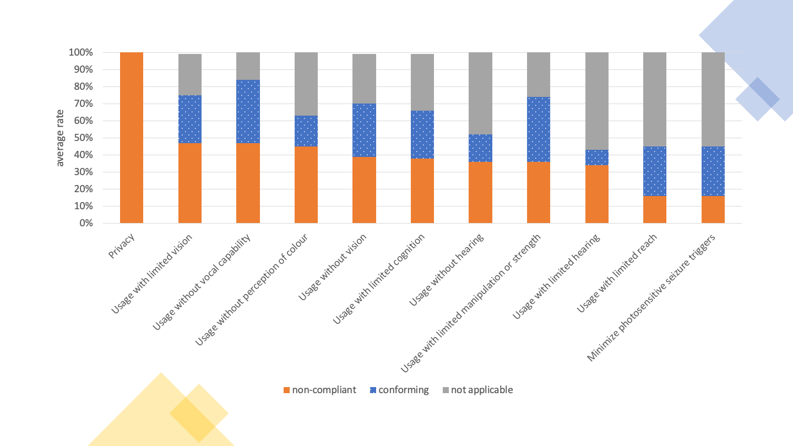
Observing the Table 36 we can conclude that there is a large average failure rate in relation to functional performance statements, when evaluating all clauses. The functional performance statements with the highest level of non-compliance were:
The remaining functional performance statements obtained an average non-compliance rate of less than 40%.
The in-depth monitoring method identified the most frequent non-compliances with the clauses of EN 301 549 applicable to a manual website review. Non-compliances stand out:
16 applications were analysed, 8 Android applications and 8 iOS applications. In the total expert evaluations, 144 screens (70 in Android and 74 in iOS applications) were considered, corresponding to an average of 9 screens per application.
The number (and percentage) of applications verifying or violating each clause is displayed in Table 37, as well as those that do not apply to any of the screens evaluated or cannot be determined.
| EN 301 549 Clause | WCAG Level | Compliant | Non-compliant | Not Applicable |
|---|---|---|---|---|
| 11.1.1.1 Non-text Content | A | 4 (25%) | 12 (75%) | 0 (0%) |
| 11.1.2.1 Audio-only and Video-only (Pre-recorded) | A | 0 (0%) | 0 (0%) | 16 (100%) |
| 11.1.2.2 Captions (Pre-recorded) | A | 0 (0%) | 0 (0%) | 16 (100%) |
| 11.1.2.3 Audio Description or Media Alternative (Pre-recorded) | A | 0 (0%) | 0 (0%) | 16 (100%) |
| 11.1.2.5 Audio Description (Pre-recorded) | AA | 0 (0%) | 0 (0%) | 16 (100%) |
| 11.1.3.1 Info and Relationships | A | 3 (19%) | 13 (81%) | 0 (0%) |
| 11.1.3.2 Meaningful Sequence | A | 0 (0%) | 1 (6%) | 0 (0%) |
| 11.1.3.3 Sensory Characteristics | A | 8 (50%) | 1 (6%) | 7 (44%) |
| 11.1.3.4 Orientation | AA | 1 (6%) | 15 (94%) | 0 (0%) |
| 11.1.3.5 Identify Input Purpose | AA | 0 (0%) | 1 (6%) | 0 (0%) |
| 11.1.4.1 Use of Colour | A | 10 (62%) | 6 (38%) | 0 (0%) |
| 11.1.4.2 Audio Control | A | 0 (0%) | 0 (0%) | 16 (100%) |
| 11.1.4.3 Contrast (Minimum) | AA | 1 (6%) | 12 (75%) | 0 (0%) |
| 11.1.4.4 Resise Text | AA | 0 (0%) | 16 (100%) | 0 (0%) |
| 11.1.4.5 Images of Text | AA | 2 (12%) | 0 (0%) | 14 (88%) |
| 11.1.4.10 Reflow | AA | 5 (31%) | 3 (19%) | 0 (0%) |
| 11.1.4.11 Non-Text Contrast | AA | 2 (12%) | 11 (69%) | 0 (0%) |
| 11.1.4.12 Text Spacing | AA | 0 (0%) | 0 (0%) | 0 (0%) |
| 11.1.4.13 Content on Hover or Focus | AA | 0 (0%) | 0 (0%) | 0 (0%) |
| 11.2.1.1 Keyboard | A | 5 (31%) | 11 (69%) | 0 (0%) |
| 11.2.1.2 In Keyboard Trap | A | 14 (88%) | 0 (0%) | 2 (12%) |
| 11.2.1.4 Character Key Shortcuts | A | 0 (0%) | 0 (0%) | 1 (6%) |
| 11.2.2.1 Timing Adjustable | A | 0 (0%) | 0 (0%) | 16 (100%) |
| 11.2.2.2 Pause, Stop, Hide | A | 0 (0%) | 2 (12%) | 14 (88%) |
| 11.2.3.1 Three Flashes or Below | A | 0 (0%) | 0 (0%) | 16 (100%) |
| 11.2.4.2 Page Titled | A | 3 (19%) | 12 (75%) | 0 (0%) |
| 11.2.4.3 Focus Order | A | 12 (75%) | 4 (25%) | 0 (0%) |
| 11.2.4.4 Link Purpose (In Context) | A | 2 (12%) | 14 (88%) | 0 (0%) |
| 11.2.4.6 Headings and Labels | AA | 12 (75%) | 4 (25%) | 0 (0%) |
| 11.2.4.7 Focus Visible | AA | 12 (75%) | 4 (25%) | 0 (0%) |
| 11.2.5.1 Pointer Gestures | A | 7 (44%) | 7 (44%) | 2 (12%) |
| 11.2.5.2 Pointer Cancellation | A | 16 (100%) | 0 (0%) | 0 (0%) |
| 11.2.5.3 Label in Name | A | 14 (88%) | 2 (12%) | 0 (0%) |
| 11.2.5.4 Motion Actuation | A | 0 (0%) | 0 (0%) | 16 (100%) |
| 11.3.1.1 Language of Page | A | 0 (0%) | 0 (0%) | 0 (0%) |
| 11.3.1.2 Language of Parts | AA | 0 (0%) | 0 (0%) | 0 (0%) |
| 11.3.2.1 On Focus | A | 16 (100%) | 0 (0%) | 0 (0%) |
| 11.3.2.2 On Input | A | 13 (81%) | 3 (19%) | 0 (0%) |
| 11.3.3.1 Error Identification | A | 12 (75%) | 2 (12%) | 2 (12%) |
| 11.3.3.2 Labels or Instructions | A | 10 (62%) | 6 (38%) | 0 (0%) |
| 11.3.3.3 Error Suggestion | AA | 11 (69%) | 3 (19%) | 2 (12%) |
| 11.3.3.4 Error Prevention (Legal, Financial, Date) | AA | 2 (12%) | 0 (0%) | 14 (88%) |
| 11.4.1.1 Parsing | A | 0 (0%) | 0 (0%) | 0 (0%) |
| 11.4.1.2 Name, Role, Value | A | 2 (12%) | 14 (88%) | 0 (0%) |
| 11.4.1.3 Status Messages (WCAG 2.1) | AA | 0 (0%) | 0 (0%) | 0 (0%) |
According to the data set out in Table 37, it can be concluded that compliance and non-compliance rates have similar values. The average compliance rate of the assessed clauses is 51% while the average non-compliance rate is 49%. Only 2 clauses passed through the 16 applications analysed and all applications failed at least one clause.
The 9 clauses with the highest success rate are:
The remaining clauses achieved a success rate of less than 75%.
The clauses with the highest failure rate were:
The remaining clauses obtained a failure rate of less than 75%.
It can be verified that none of the applications makes use of audio feedback, so the criteria associated with audio and subtitling were not analysed. It should be noted that two of the evaluated applications were totally inaccessible by screen reader.
Two analyses were carried out in relation to these statements:
The Table 38 presents the results obtained in the first analysis, in which only the clauses of the primary relationships were taken into account.
| Functional Performance Statement | Conforming | Infringing |
|---|---|---|
| Usage without vision | 0 (0%) | 16 (100%) |
| Usage with limited vision | 0 (0%) | 16 (100%) |
| Usage without perception of colour | 1 (6%) | 15 (94%) |
| Usage without hearing | 4 (25%) | 12 (75%) |
| Usage with limited hearing | 8 (50%) | 1 (6%) |
| Usage with limited manipulation and/or strength | 0 (0%) | 16 (100%) |
| Usage with limited reach | 1 (6%) | 15 (94%) |
| Minimize photosensitive seizures | 0 (0%) | 0 (0%) |
| Usage with limited cognition capabilities | 0 (0%) | 16 (100%) |
Observing the Table 38, we can conclude that there is a great failure rate in relation to functional performance statements, when only the clauses of primary relationships are evaluated. Four of the functional performance statements are non-compliant on all sites analysed. Another four manage to have a compliance rate different from zero:
The Table 39 presents the results obtained in the second analysis, in which all the clauses of primary and secondary relationships were taken into account.
| Functional performance statements | Number of conforming | No of non-compliant | No of not applicable |
|---|---|---|---|
| Use in the absence of vision | 0 (0%) | 16 (100%) | 0 (0%) |
| Usage with limited vision | 0 (0%) | 16 (100%) | 0 (0%) |
| Usage without perception of colour | 1 (6%) | 15 (94%) | 0 (0%) |
| Usage without hearing | 4 (25%) | 12 (75%) | 0 (0%) |
| Usage with limited hearing | 4 (25%) | 12 (75%) | 0 (0%) |
| Usage without vocal capability | 0 (0%) | 16 (100%) | 0 (0%) |
| Usage with limited manipulation capability and/or strength | 0 (0%) | 16 (100%) | 0 (0%) |
| Usage with limited reach | 1 (6%) | 15 (94%) | 0 (0%) |
| Minimize photosensitive seizures | 0 (0%) | 0 (0%) | 16 (100%) |
| Usage with limited cognition capabilities | 0 (0%) | 16 (100%) | 0 (0%) |
| Privacy | 0 (0%) | 16 (100%) | 0 (0%) |
A similar situation to the first analysis to apps was observed in Table 35 to websites. Thus, 6 functional performance statements are non-compliant in all the apps analysed, with the number of four functional performance statements remaining at a compliance rate above zero, although with lower values than in the first analysis:
The in-depth monitoring method identified the most frequent non-compliances with clauses EN 301 549 applicable to a manual analysis of mobile applications. It should be noted that only 59% of the clauses are compliant, many with a significant impact on the use of these applications. Mobile evaluations have been adapted from the techniques described in the Trusted Tester test methodology and benefit from a similar standardisation to that performed for website evaluations. Of the detected non-compliances, the following stand out:
In this study, 6 participants were present, two with visual impairment, two with motor impairment, and two with hearing impairment. The participants of this study were all experienced users. Despite the various problems encountered and observed during the session, all tasks were successfully completed without major interventions of the evaluator. The most common problems observed and reported by the participants were as follows:
Participants in this study are all experienced smartphone users who have been using for more than three years. Despite the numerous problems encountered and observed during the session, except for two tasks with two different users, all the others were successfully completed without the intervention of the evaluator. The first task in question, in fact, was successfully completed from the perspective of the participant, but unfortunately the information provided by the application, which led him to believe that he was facing the right result, was incorrect. This could have had serious consequences if we were in a real context of use. The failure in the second task was due to a problem of content exploration that all participants felt when they were told to find a specific service. The most common problems observed and reported by the participants were as follows:
The in-depth monitoring sample selected the five websites with the best and the five websites with the worst results in simplified monitoring. This makes it possible to compare the results of these websites in the two monitoring methodologies. For this analysis, the percentage of compliant and non-compliant clauses on each website was calculated, taking into account only the clauses present. The five websites with the best results in simplified monitoring are compliant with 38% of the clauses on average (better 57% and worst 24%), and are not compliant with 62% of the clauses (worst 76% and better 43%) in in-depth monitoring. The five websites with the lowest rankings in simplified monitoring comply with 33% of the clauses on average (better 42% and worst 17%), and are not compliant with 67% of the clauses (worst 83% and better 58%) in in-depth monitoring. Although we are faced with a small sample, with only 10 websites, it can be seen that the best ranked sites in simplified monitoring are also the most compliant with the clauses in in-depth monitoring. On average, the best ranked websites have a compliance rate for the clauses of the European standard 5 percentage points higher than the worst. Comparing the best of the top websites with the best of the worst website, it can be seen that what is in the best batch has an average compliance rate 15 percentage points higher than its worst counterpart.
We also analysed the part of the in-depth sample that corresponds to websites that were not evaluated in the simplified monitoring because they do not have at least 10 pages with more than 100 HTML elements. Although some of these websites have been classified as containing few pages due to problems with the crawling process, it was possible to see through in-depth monitoring that the sites possess good compliance rates. They even have better results than those best classified in simplified monitoring. These 10 websites showed an average compliance rate of 46% for the Standard clauses (better 56% and worse 40%) and a non-compliance with 54% of the clauses (worst 60% and better 44%).
In this section we present the results by operating system as well as a comparison between the two versions of the applications of each public authority. The number (and percentage) of applications verifying or violating each clause is displayed in Table 40, as well as those that do not apply to any of the screens evaluated or cannot be determined.
| EN 301 549 Clause | WCAG Level | Android Compliant | iOS Compliant | Android Non-compliant | iOS Non-compliant |
|---|---|---|---|---|---|
| 11.1.1.1 Non-text Content | A | 2 (25%) | 2 (25%) | 6 (75%) | 6 (75%) |
| 11.1.2.1 Audio-only and Video-only (Pre-recorded) | A | 0 (0%) | 0 (0%) | 0 (0%) | 0 (0%) |
| 11.1.2.2 Captions (Pre-recorded) | A | 0 (0%) | 0 (0%) | 0 (0%) | 0 (0%) |
| 11.1.2.3 Audio Description or Media Alternative (Pre-recorded) | A | 0 (0%) | 0 (0%) | 0 (0%) | 0 (0%) |
| 11.1.2.5 Audio Description (Pre-recorded) | AA | 0 (0%) | 0 (0%) | 0 (0%) | 0 (0%) |
| 11.1.3.1 Info and Relationships | A | 3 (37.5%) | 0 (0%) | 5 (62.5%) | 8 (100%) |
| 11.1.3.2 Meaningful Sequence | A | 0 (0%) | 0 (0%) | 0 (0%) | 0 (0%) |
| 11.1.3.3 Sensory Characteristics | A | 0 (0%) | 8 (100%) | 1 (12.5%) | 0 (0%) |
| 11.1.3.4 Orientation | AA | 1 (12.5%) | 0 (0%) | 7 (87.5%) | 8 (100%) |
| 11.1.3.5 Identify Input Purpose | AA | 0 (0%) | 0 (0%) | 0 (0%) | 1 (12.5%) |
| 11.1.4.1 Use of Colour | A | 2 (25%) | 8 (100%) | 6 (75%) | 0 (0%) |
| 11.1.4.2 Audio Control | A | 0 (0%) | 0 (0%) | 0 (0%) | 0 (0%) |
| 11.1.4.3 Contrast (Minimum) | AA | 1 (12.5%) | 0 (0%) | 4 (50%) | 8 (100%) |
| 11.1.4.4 Resise Text | AA | 0 (0%) | 0 (0%) | 8 (100%) | 8 (100%) |
| 11.1.4.5 Images of Text | AA | 1 (12.5%) | 1 (12.5%) | 0 (0%) | 0 (0%) |
| 11.1.4.10 Reflow | AA | 5 (62.5%) | 0 (0%) | 3 (37.5%) | 0 (0%) |
| 11.1.4.11 Non-Text Contrast | AA | 2 (25%) | 0 (0%) | 3 (37.5%) | 8 (100%) |
| 11.1.4.12 Text Spacing | AA | 0 (0%) | 0 (0%) | 0 (0%) | 0 (0%) |
| 11.1.4.13 Content on Hover or Focus | AA | 0 (0%) | 0 (0%) | 0 (0%) | 0 (0%) |
| 11.2.1.1 Keyboard | A | 4 (50%) | 1 (12.5%) | 4 (50%) | 7 (87.5%) |
| 11.2.1.2 In Keyboard Trap | A | 8 (100%) | 6 (75%) | 0 (0%) | 0 (0%) |
| 11.2.1.4 Character Key Shortcuts | A | 0 (0%) | 0 (0%) | 0 (0%) | 0 (0%) |
| 11.2.2.1 Timing Adjustable | A | 0 (0%) | 0 (0%) | 0 (0%) | 0 (0%) |
| 11.2.2.2 Pause, Stop, Hide | A | 0 (0%) | 0 (0%) | 0 (0%) | 2 (25%) |
| 11.2.3.1 Three Flashes or Below | A | 0 (0%) | 0 (0%) | 0 (0%) | 0 (0%) |
| 11.2.4.2 Page Titled | A | 2 (25%) | 1 (12.5%) | 6 (75%) | 6 (75%) |
| 11.2.4.3 Focus Order | A | 7 (87.5%) | 5 (62.5%) | 1 (12.5%) | 3 (37.5%) |
| 11.2.4.4 Link Purpose (In Context) | A | 1 (12.5%) | 1 (12.5%) | 7 (87.5%) | 7 (87.5%) |
| 11.2.4.6 Headings and Labels | AA | 4 (50%) | 8 (100%) | 4 (50%) | 0 (0%) |
| 11.2.4.7 Focus Visible | AA | 8 (100%) | 4 (50%) | 0 (0%) | 4 (50%) |
| 11.2.5.1 Pointer Gestures | A | 3 (37.5%) | 4 (50%) | 4 (50%) | 3 (37.5%) |
| 11.2.5.2 Pointer Cancellation | A | 8 (100%) | 8 (100%) | 0 (0%) | 0 (0%) |
| 11.2.5.3 Label in Name | A | 7 (87.5%) | 7 (87.5%) | 1 (12.5%) | 1 (12.5%) |
| 11.2.5.4 Motion Actuation | A | 0 (0%) | 0 (0%) | 0 (0%) | 0 (0%) |
| 11.3.1.1 Language of Page | A | 0 (0%) | 0 (0%) | 0 (0%) | 0 (0%) |
| 11.3.1.2 Language of Parts | AA | 0 (0%) | 0 (0%) | 0 (0%) | 0 (0%) |
| 11.3.2.1 On Focus | A | 8 (100%) | 8 (100%) | 0 (0%) | 0 (0%) |
| 11.3.2.2 On Input | A | 7 (87.5%) | 6 (75%) | 1 (12.5%) | 2 (25%) |
| 11.3.3.1 Error Identification | A | 5 (62.5%) | 7 (87.5%) | 2 (25%) | 0 (0%) |
| 11.3.3.2 Labels or Instructions | A | 4 (50%) | 6 (75%) | 4 (50%) | 2 (25%) |
| 11.3.3.3 Error Suggestion | AA | 5 (62.5%) | 6 (75%) | 2 (25%) | 1 (12.5%) |
| 11.3.3.4 Error Prevention (Legal, Financial, Date) | AA | 0 (0%) | 2 (25%) | 0 (0%) | 0 (0%) |
| 11.4.1.1 Parsing | A | 0 (0%) | 0 (0%) | 0 (0%) | 0 (0%) |
| 11.4.1.2 Name, Role, Value | A | 1 (12.5%) | 1 (12.5%) | 7 (87.5%) | 7 (87.5%) |
| 11.4.1.3 Status Messages (WCAG 2.1) | AA | 0 (0%) | 0 (0%) | 0 (0%) | 0 (0%) |
According to the data set out in Table 40, it can be concluded that compliance rates with EN 301 549 clauses in both operating systems are close to 50%. Only four of the clauses assessed achieved 100% compliance in both operating systems. On Android the average compliance rate of the evaluated clauses is 53%, with only five clauses in full compliance (or not present), and in iOS 51% with nine clauses in full compliance (or not present):
Compliant clauses on Android and iOS:
Compliant clauses only on Android:
Compliant clauses only on iOS:
The five clauses with the greatest discrepancy between operating systems are:
The eight clauses with the highest failure rate were:
On Android and iOS
iOS only
The remaining clauses obtained a failure rate of 75% or less.
On the 281 websites analysed, accessibility declarations were found in only 13, corresponding to 4.6% of the sample. 29 other websites were identified with an accessibility page but which did not correspond to a declaration built in accordance with the model proposed in Decree-Law No 83/2018 of 19 October 2018 transposing Directive (EU) 2016/2102 of the European Parliament and of the Council on the accessibility of websites and mobile applications. It would be enough for the entities to which these websites belong to correct their declarations and we would have 15% websites with Declaration of Accessibility.
The 13 accessibility declarations reported the following levels of compliance:
The average age (on 31 December 2021) of the identified accessibility declarations is 13.9 months, with the most recent declaration just under 4 months and the oldest approximately 2 years and 5 months. Taking this into account, it is normal that the websites of several of these accessibility statements have already changed since the date of publication of the declaration. Nevertheless, the score given by AccessMonitor to each of the websites was analysed and the following averages were obtained for each level of compliance reported:
Use of the execution procedure and comments from end-users
In Portugal the entity responsible for receiving and collecting notifications from public sector bodies in breach of accessibility requirements is the National Institute for Rehabilitation, I.P. (INR). The INR provides a form to report discrimination situations by forwarding complaints to the competent authorities.
The information provided by the INR on complaints received for the year 2021 was as follows:
In addition to the formal complaint procedure, in which users allege facts likely to constitute an administrative offence under the Non-Discrimination Law (Law No 46/2006) — formally claiming that they are being discriminated against — users can also contact the authorities, reporting difficulties in accessing certain documents or elements of the interface, suggestions for improvement, alerts of inaccessible situations, requesting access to alternative formats (e.g. requesting prints in braille, printouts in extended characters, or other) for specific documents, requesting accessible formats of specific documents that, because they are excepted (e.g. archival documents, with edit dates prior to September 2018), they are in formats that do not comply with European Standard EN 301 549. For this purpose, the Accessibility Statement, which each entity is required to make available on its website or mobile application, has in its section III the contact details of its respective entity.
The following stakeholders were consulted for the monitoring and preparation of this report:
| Principles | Simplified monitoring | In-depth monitoring | |
|---|---|---|---|
| Home+ | 2k | ||
| Perceivable | 68.2% | 66.5% | 77.6% |
| Operable | 29.8% | 30.8% | 51.5% |
| Understandable | 10.0% | 15.3% | 30.4 % |
| Robust | 84.0% | 89.4% | 93.5% |
| In average | 48.0% | 50.5% | 63.3% |
| Principles | Operating System | |
|---|---|---|
| iOS | Android | |
| Perceivable | 63.9% | 67.8% |
| Operable | 41.6% | 32.7% |
| Understandable | 10.7% | 23.9% |
| Robust | 87.5% | 87.5% |
| Average | 50.9% | 53.0% |
| Principles | Sites | Apps |
|---|---|---|
| Perceivable | 77.6% | 61.3% |
| Operable | 51.5% | 40.5% |
| Understandable | 30.4% | 15.3% |
| Robust | 93.8% | 87.5% |
| Average | 63.3% | 51.2% |
| Functional performance statement | Number of conforming | No of non-compliant | No of not applicable |
|---|---|---|---|
| Usage with limited vision | 33% | 46% | 21% |
| Usage without perception of colour | 18% | 45% | 37% |
| Usage without vision | 32% | 41% | 27% |
| Usage with limited manipulation capability and/or strength | 40% | 36% | 24% |
| Usage with limited cognition capabilities | 41% | 35% | 25% |
| Usage without hearing | 6% | 34% | 60% |
| Usage with limited hearing | 6% | 22% | 71% |
| Usage with limited reach | 37% | 15% | 48% |
| Minimize photosensitive seizures | 4% | 13% | 83% |
| Entity | Website | Type of Service |
|---|---|---|
| Administração Regional de Saúde de Lisboa e Vale do Tejo, I.P. | https://www.arslvt.min-saude.pt | Central government |
| Administração Regional de Saúde do Alentejo, I.P | http://www.arsalentejo.min-saude.pt | Central government |
| Administração Regional de Saúde do Algarve, I.P | http://www.arsalgarve.min-saude.pt | Central government |
| Administração Regional de Saúde do Centro, I.P | http://www.arscentro.min-saude.pt | Central government |
| Administração Regional de Saúde do Norte, I.P | http://www.arsnorte.min-saude.pt | Central government |
| Agência para a Competitividade e Inovação, I.P. | https://www.iapmei.pt | Central government |
| Agência para a Modernização Administrativa, I.P. | https://www.ama.gov.pt | Central government |
| Alto Comissariado para as Migrações, I.P. | https://www.acm.gov.pt | Central government |
| Biblioteca Nacional de Portugal | http://www.bnportugal.gov.pt | Central government |
| INA - Instituto Nacional de Administração, I.P. | http://www.ina.gov.pt/ | Central government |
| Direção-Geral da Saúde | https://www.dgs.pt | Central government |
| Direção-Geral das Artes | https://www.dgartes.gov.pt | Central government |
| Direção-Geral das Autarquias Locais | http://www.portalautarquico.pt | Central government |
| Direção-Geral de Estatísticas da Educação e Ciência | https://www.dgeec.mec.pt/np4/home | Central government |
| Direção-Geral do Consumidor | https://www.consumidor.gov.pt | Central government |
| Direção-Geral do Emprego e das Relações de Trabalho | https://www.dgert.gov.pt | Central government |
| Direção-Geral do Ensino Superior | https://www.dges.gov.pt | Central government |
| Direção-Geral do Livro, dos Arquivos e das Bibliotecas | https://dglab.gov.pt | Central government |
| Direção-Geral do Património | http://www.patrimoniocultural.gov.pt | Central government |
| Direção-Geral do Território | https://www.dgterritorio.gov.pt | Central government |
| Fundação para a Ciência e a Tecnologia, I.P | https://www.fct.pt | Central government |
| Infarmed - Autoridade Nacional do Medicamento e Produtos de Saúde, I.P. | http://www.infarmed.pt | Central government |
| Instituto da Conservação da Natureza e das Florestas, I.P. | https://www.icnf.pt | Central government |
| Instituto da Habitação e da Reabilitação Urbana, I.P. | https://www.portaldahabitacao.pt | Central government |
| Instituto de Financiamento da Agricultura e Pescas, I.P. | https://www.ifap.pt | Central government |
| Instituto Nacional para a Reabilitação, I.P. | https://www.inr.pt/inicio | Central government |
| Instituto Português do Sangue e da Transplantação, IP | http://www.ipst.pt/ | Central government |
| Programa SIMPLEX | https://www.simplex.gov.pt | Central government |
| Serviços Partilhados do Ministério da Saúde, E.P.E. | https://spms.min-saude.pt/ | Central government |
| Turismo de Portugal, I.P. | http://www.turismodeportugal.pt | Central government |
| Academia de Música de Santa Cecília | https://www.am-santacecilia.pt | Basic and Secondary Education |
| Colégio Arautos do Evangelho | https://www.colegioarautos.net | Basic and Secondary Education |
| Colégio D. Diogo de Sousa | https://cdds.pt/~wp/ | Basic and Secondary Education |
| Colégio Efanor | https://www.colegioefanor.pt/pt/ | Basic and Secondary Education |
| Colégio Nossa Senhora do Rosário | https://www.colegiodorosario.pt | Basic and Secondary Education |
| Escola Básica e Secundária de Arga e Lima | https://www.agescolasargaelima.pt/ | Basic and Secondary Education |
| Escola Básica e Secundária de Vila Cova | http://www.aevc.edu.pt | Basic and Secondary Education |
| Escola Básica e Secundária Dr. Machado de Matos | https://aemachadodematos.pt/agrupamento/ | Basic and Secondary Education |
| Escola Básica e Secundária Dr. Manuel Ribeiro Ferreira | http://agalvaiazere.ccems.pt | Basic and Secondary Education |
| Escola Básica e Secundária Henrique Sommer | http://aehenriquesommer.ccems.pt | Basic and Secondary Education |
| Escola Secundária Adolfo Portela | http://www.esap.edu.pt | Basic and Secondary Education |
| Escola Secundária Carlos Amarante | https://aecarlosamarante.pt | Basic and Secondary Education |
| Escola Secundária de Penafiel | http://www.espenafiel.org | Basic and Secondary Education |
| Escola Secundária do Restelo | https://www.aerestelo.pt | Basic and Secondary Education |
| Escola Secundária Dr. Joaquim Gomes Ferreira Alves | https://www.esdjgfa.org | Basic and Secondary Education |
| Escola Secundária Infanta D. Maria | https://www.esidm.pt | Basic and Secondary Education |
| Escola Secundária João Silva Correia | http://www.aejsc.pt | Basic and Secondary Education |
| Escola Secundária Manuel da Fonseca | https://www.aesc.edu.pt | Basic and Secondary Education |
| Escola Secundária Quinta das Palmeiras | https://agrupamento.espjs.edu.pt | Basic and Secondary Education |
| Escola Secundária Tomaz Pelayo | https://home.tomazpelayo.com | Basic and Secondary Education |
| Instituto Piaget | https://ipiaget.org | Higher education |
| Instituto Politécnico da Guarda | http://www.ipg.pt | Higher education |
| Instituto Politécnico de Beja | https://www.ipbeja.pt/Paginas/default.aspx | Higher education |
| Instituto Politécnico de Leiria | https://www.ipleiria.pt | Higher education |
| Instituto Politécnico do Porto | https://www.ipp.pt | Higher education |
| Técnico Lisboa | https://tecnico.ulisboa.pt | Higher education |
| Universidade Aberta | https://portal.uab.pt | Higher education |
| Universidade Autónoma de Lisboa | https://autonoma.pt | Higher education |
| Universidade Católica Portuguesa | https://www.ucp.pt | Higher education |
| Universidade da Madeira | https://www.uma.pt | Higher education |
| Universidade de Coimbra | https://www.uc.pt | Higher education |
| Universidade de Évora | https://www.uevora.pt | Higher education |
| Universidade de Lisboa | https://www.ulisboa.pt | Higher education |
| Universidade do Algarve | https://www.ualg.pt | Higher education |
| Universidade do Minho | https://www.uminho.pt | Higher education |
| Universidade do Porto | https://sigarra.up.pt | Higher education |
| Universidade dos Açores | https://www.uac.pt | Higher education |
| Universidade Lusíada - Lisboa | https://www.lis.ulusiada.pt | Higher education |
| Universidade Lusófona de Humanidades e Tecnologia | https://www.ulusofona.pt | Higher education |
| Universidade Nova de Lisboa | https://www.unl.pt | Higher education |
| Centro Hospitalar de Setúbal, EPE | http://www.chs.min-saude.pt | Hospitals |
| Centro Hospitalar do Médio Tejo, EPE | http://www.chmt.min-saude.pt | Hospitals |
| Centro Hospitalar e Universitário de Coimbra, EPE | https://www.chuc.min-saude.pt | Hospitals |
| Centro Hospitalar Universitário de Lisboa Central, EPE | http://www.chlc.min-saude.pt | Hospitals |
| Centro Hospitalar Universitário de São João, EPE | https://portal-chsj.min-saude.pt | Hospitals |
| Centro Hospitalar Universitário do Algarve, EPE | http://www.chualgarve.min-saude.pt | Hospitals |
| Centro Hospitalar Universitário do Porto, EPE | https://www.chporto.pt | Hospitals |
| Hospital Beatriz Ângelo | http://www.hbeatrizangelo.pt | Hospitals |
| Hospital da Senhora da Oliveira Guimarães, EPE | https://www.hospitaldeguimaraes.min-saude.pt | Hospitals |
| Hospital de Braga, EPE | https://www.hospitaldebraga.pt | Hospitals |
| Hospital de Cascais Dr. José de Almeida | https://www.hospitaldecascais.pt | Hospitals |
| Hospital de Magalhães Lemos, EPE | https://www.hmlemos.min-saude.pt | Hospitals |
| Hospital de Vila Franca de Xira, EPE | https://www.hospitalvilafrancadexira.pt | Hospitals |
| Hospital do Espírito Santo de Évora, EPE | https://www.hevora.min-saude.pt | Hospitals |
| Hospital Garcia de Orta, EPE | https://www.hgo.min-saude.pt | Hospitals |
| Hospital Professor Doutor Fernando Fonseca, EPE | https://hff.min-saude.pt | Hospitals |
| Instituto de Oftalmologia Dr. Gama Pinto | https://www.igpinto.min-saude.pt | Hospitals |
| Instituto Português de Oncologia de Coimbra Francisco Gentil, EPE | https://www.ipocoimbra.min-saude.pt | Hospitals |
| Instituto Português de Oncologia de Lisboa Francisco Gentil, EPE | https://www.ipolisboa.min-saude.pt | Hospitals |
| Instituto Português de Oncologia do Porto Francisco Gentil, EPE | https://ipoporto.pt | Hospitals |
| Algueirão-Mem Martins | https://www.jfamm.pt | Neighborhood joints |
| Arrifes | https://www.arrifes.pt | Neighborhood joints |
| Braga (São Vítor) | http://www.juntasvictor.pt | Neighborhood joints |
| Buarcos e São Julião | https://www.buarcosesaojuliao.pt | Neighborhood joints |
| Castelo Branco | https://jf-castelobranco.pt | Neighborhood joints |
| Fafe | http://www.jf-fafe.pt | Neighborhood joints |
| Odivelas | http://jf-odivelas.pt | Neighborhood joints |
| Pinhel | https://freguesiadepinhel.net | Neighborhood joints |
| Portimão | http://www.jf-portimao.pt | Neighborhood joints |
| Porto Santo | http://www.jfportosanto.com | Neighborhood joints |
| Praia da Vitória (Santa Cruz) | https://freguesiasantacruz.pt | Neighborhood joints |
| Rabo de Peixe | http://www.jf-rabodepeixe.pt | Neighborhood joints |
| Rio Tinto | https://www.riotinto.pt | Neighborhood joints |
| Santa Maria Maior | https://www.jf-santamariamaior.pt | Neighborhood joints |
| Santo António | http://www.jf-santoantonio.pt | Neighborhood joints |
| Santo António dos Olivais | https://jfsao.pt | Neighborhood joints |
| São João da Madeira | https://www.fsjm.pt | Neighborhood joints |
| São Martinho | https://jf-saomartinho.pt | Neighborhood joints |
| Setúbal (São Sebastião) | https://www.jfss.pt | Neighborhood joints |
| União das freguesias da Sé e São Lourenço | http://www.junta-se-slourenco.pt | Neighborhood joints |
| União das freguesias de Beja (Santiago Maior e São João Baptista) | https://www.ufsmaiorsjbaptista.pt | Neighborhood joints |
| União das freguesias de Cascais e Estoril | https://jf-cascaisestoril.pt | Neighborhood joints |
| União das freguesias de Leiria, Pousos, Barreira e Cortes | https://uf-lpbc.pt | Neighborhood joints |
| União das freguesias de Mafamude e Vilar do Paraíso | https://www.mafamudevilarparaiso.pt | Neighborhood joints |
| União das freguesias de Malagueira e Horta das Figueiras | https://uniaof-malagueirahfigueiras.pt | Neighborhood joints |
| União das freguesias de São Mamede de Infesta e Senhora da Hora | https://www.uf-smish.pt | Neighborhood joints |
| União das freguesias de Sé, Santa Maria e Meixedo | https://ufssmm.pt | Neighborhood joints |
| União das freguesias de Viana do Castelo (Santa Maria Maior e Monserrate) e Meadela | http://santamariamaior-monserrate-meadela.com | Neighborhood joints |
| União de freguesias da cidade de Santarém | https://www.uf-cidadesantarem.pt | Neighborhood joints |
| Viseu | http://freguesiadeviseu.pt/portal/ | Neighborhood joints |
| Almada | https://www.cm-almada.pt/ | Municipalities |
| Aveiro | https://www.cm-aveiro.pt | Municipalities |
| Beja | https://cm-beja.pt | Municipalities |
| Braga | https://www.cm-braga.pt | Municipalities |
| Bragança | https://www.cm-braganca.pt | Municipalities |
| Castelo Branco | https://www.cm-castelobranco.pt/ | Municipalities |
| Campo Maior | https://www.cm-campo-maior.pt/pt/ | Municipalities |
| Coimbra | https://www.cm-coimbra.pt | Municipalities |
| Covilhã | http://www.cm-covilha.pt/ | Municipalities |
| Estremoz | https://www.cm-estremoz.pt | Municipalities |
| Évora | https://www.cm-evora.pt | Municipalities |
| Faro | https://www.cm-faro.pt | Municipalities |
| Funchal | https://www.funchal.pt/pt/ | Municipalities |
| Guarda | https://www.mun-guarda.pt | Municipalities |
| Guimarães | https://www.cm-guimaraes.pt | Municipalities |
| Leiria | https://www.cm-leiria.pt | Municipalities |
| Lisboa | https://www.lisboa.pt/ | Municipalities |
| Mirandela | https://www.cm-mirandela.pt | Municipalities |
| Mortágua | https://www.cm-mortagua.pt | municipalities |
| Nazaré | https://www.cm-nazare.pt | Municipalities |
| Odemira | https://www.cm-odemira.pt | Municipalities |
| Oliveira do Hospital | https://www.cm-oliveiradohospital.pt | Municipalities |
| Ponta Delgada | https://www.cm-pontadelgada.pt/ | Municipalities |
| Ponte de Lima | https://www.cm-pontedelima.pt | Municipalities |
| Portalegre | http://www.cm-portalegre.pt | Municipalities |
| Portimão | https://www.cm-portimao.pt | Municipalities |
| Porto | https://www.cm-porto.pt/ | Municipalities |
| Sabrosa | https://www.sabrosa.pt | Municipalities |
| Santa Maria da Feira | https://cm-feira.pt | Municipalities |
| Santarém | https://www.cm-santarem.pt | Municipalities |
| Seia | https://www.cm-seia.pt | Municipalities |
| Setúbal | https://www.mun-setubal.pt | Municipalities |
| Torres Novas | https://www.cm-torresnovas.pt | Municipalities |
| Viana do Castelo | http://www.cm-viana-castelo.pt | Municipalities |
| Vila Real | https://www.cm-vilareal.pt | Municipalities |
| Viseu | https://www.cm-viseu.pt/ | Municipalities |
| Casa Colombo - Museu de Porto Santo | http://www.museucolombo-portosanto.com/home.html | Museums |
| Cultura Madeira - Museus | https://cultura.madeira.gov.pt | Museums |
| Museu das Flores | http://www.museu-flores.azores.gov.pt | Museums |
| Museu de Angra do Heroísmo | http://museu-angra.azores.gov.pt/ | Museums |
| Museu do Pico / Museu dos Baleeiros | http://www.museu-pico.azores.gov.pt | Museums |
| Museu Nacional da Imprensa | http://www.museudaimprensa.pt | Museums |
| Museu Nacional da Música | http://www.museunacionaldamusica.gov.pt | Museums |
| Museu Nacional de Arqueologia | http://www.museunacionalarqueologia.gov.pt/ | Museums |
| Museu Nacional de Arte Antiga | http://www.museudearteantiga.pt/ | Museums |
| Museu Nacional de Arte Contemporânea - Museu do Chiado | http://museuartecontemporanea.pt/ | Museums |
| Museu Nacional de Etnologia / Museu de Arte Popular | https://mnetnologia.wordpress.com/ | Museums |
| Museu Nacional de História Natural e da Ciência | http://www.museus.ulisboa.pt | Museums |
| Museu Nacional de Soares dos Reis | http://www.museusoaresdosreis.gov.pt | Museums |
| Museu Nacional do Azulejo | http://www.museudoazulejo.pt/ | Museums |
| Museu Nacional dos Coches | http://museudoscoches.gov.pt/ | Museums |
| Museu Nacional Ferroviário | http://www.fmnf.pt/ | Museums |
| Museu Nacional Grão Vasco | http://www.museunacionalgraovasco.gov.pt/ | Museums |
| Palácio Nacional da Ajuda | http://www.palacioajuda.gov.pt | Museums |
| Palácio Nacional da Pena | https://www.parquesdesintra.pt | Museums |
| Palácio Nacional de Mafra | http://www.palaciomafra.gov.pt | Museums |
| ACAPO - Associação de Cegos e Amblíopes de Portugal | http://www.acapo.pt/ | Non-Governmental Organisations |
| APCL Lisboa - Associação de Paralisia Cerebral de Lisboa | http://www.apcl.org.pt/ | Non-Governmental Organisations |
| APD – Associação Portuguesa de Deficientes | http://www.apd.org.pt/ | Non-Governmental Organisations |
| APELA - Associação Portuguesa de Esclerose Lateral Amiotrófica | http://www.apela.pt/ | Non-Governmental Organisations |
| APN – Associação Portuguesa de Doentes Neuromusculares | http://www.apn.pt/ | Non-Governmental Organisations |
| APPACDM Lisboa - Associação Portuguesa de Pais e Amigos do Cidadão Deficiente Mental de Lisboa | http://www.appacdm-lisboa.org/ | Non-Governmental Organisations |
| APPACDM Porto - Associação Portuguesa de Pais e Amigos do Cidadão Deficiente Mental do Porto | http://www.appacdmporto.com/ | Non-Governmental Organisations |
| APPDA Lisboa - Associação Portuguesa para a Perturbações do Desenvolvimento e Autismo | http://www.appda-lisboa.org.pt/ | Non-Governmental Organisations |
| APS – Associação Portuguesa de Surdos - Delegação de Lisboa | https://apsurdos.org.pt | Non-Governmental Organisations |
| ARCIL - Associação para Recuperação de Cidadãos Inadaptados da Lousã | http://www.arcil.org | Non-Governmental Organisations |
| CADIn - Centro de Apoio ao Desenvolvimento Infantil | http://www.cadin.net/ | Non-Governmental Organisations |
| CECD - Mira Sintra, CRL | http://www.cecdmirasintra.org/ | Non-Governmental Organisations |
| CERCILISBOA - Cooperativa de Ensino e Reabilitação de Cidadãos Inadaptados de Lisboa | https://www.cercilisboa.org.pt | Non-Governmental Organisations |
| CNOD – Confederação Nacional de Organizações de Pessoas com Deficiência | https://cnod.pt | Non-Governmental Organisations |
| Comité Paralimpico de Portugal | http://www.comiteparalimpicoportugal.pt/ | Non-Governmental Organisations |
| CRID - Centro de Reabilitação e Integração de Deficientes | http://www.crid.pt/ | Non-Governmental Organisations |
| FENACERCI - Federação Nacional das Cooperativas de Solidariedade Social | http://www.fenacerci.pt/ | Non-Governmental Organisations |
| FPAS - Federação Portuguesa das Associações de Surdos | https://fpasurdos.pt | Non-Governmental Organisations |
| FPDA - Federação Portuguesa de Autismo | http://www.fpda.pt/ | Non-Governmental Organisations |
| Pais em Rede | http://paisemrede.pt/ | Non-Governmental Organisations |
| Assembleia da República | http://www.parlamento.pt | Sovereign bodies and independent entities |
| Autoridade da Mobilidade e dos Transportes | https://www.amt-autoridade.pt | Sovereign bodies and independent entities |
| Banco de Portugal | https://www.bportugal.pt | Sovereign bodies and independent entities |
| Conselho Económico e Social | https://www.ces.pt | Sovereign bodies and independent entities |
| Entidade Reguladora da Saúde | https://www.ers.pt | Sovereign bodies and independent entities |
| Entidade Reguladora dos Serviços de Águas e Resíduos | http://www.ersar.pt/pt | Sovereign bodies and independent entities |
| Entidade Reguladora dos Serviços Energéticos | https://www.erse.pt | Sovereign bodies and independent entities |
| Entidade Reguladora para a Comunicação Social | https://www.erc.pt | Sovereign bodies and independent entities |
| Presidência da República | https://www.presidencia.pt | Sovereign bodies and independent entities |
| Procuradoria-Geral da República | https://www.ministeriopublico.pt | Sovereign bodies and independent entities |
| Procuradoria-Geral Distrital de Lisboa | https://www.pgdlisboa.pt/home.php | Sovereign bodies and independent entities |
| Provedoria de Justiça | https://www.provedor-jus.pt | Sovereign bodies and independent entities |
| Supremo Tribunal Administrativo | https://www.stadministrativo.pt | Sovereign bodies and independent entities |
| Direção-geral da Administração da Justiça | https://dgaj.justica.gov.pt | Directorate-General |
| Justiça Mais Próxima 20/23 | https://justicamaisproxima.justica.gov.pt | Sovereign bodies and independent entities |
| Tribunal Constitucional | http://www.tribunalconstitucional.pt | Sovereign bodies and independent entities |
| Tribunal da Relação de Coimbra | https://trc.pt | Sovereign bodies and independent entities |
| Tribunal da Relação de Lisboa | http://www.trl.mj.pt | Sovereign bodies and independent entities |
| Tribunal da Relação do Porto | https://www.trp.pt | Sovereign bodies and independent entities |
| Tribunal de Contas | https://www.tcontas.pt | Sovereign bodies and independent entities |
| Autenticação Gov | https://www.autenticacao.gov.pt | Most sought-after portals and services |
| Autoridade Nacional de Comunicações | https://www.anacom.pt | Most sought-after portals and services |
| Comissão Nacional de Eleições | https://www.cne.pt | Most sought-after portals and services |
| Diário da República | https://dre.pt | Most sought-after portals and services |
| Direção-Geral da Educação | https://www.dge.mec.pt | Most sought-after portals and services |
| ePortugal | https://eportugal.gov.pt | Most sought-after portals and services |
| Instituto da Mobilidade e dos Transportes, I.P. | https://www.imt-ip.pt | Most sought-after portals and services |
| Instituto do Emprego e Formação Profissional, I.P. | https://www.iefp.pt/ | Most sought-after portals and services |
| Instituto Nacional de Emergência Médica, I.P. | https://www.inem.pt | Most sought-after portals and services |
| Instituto Nacional de Estatística | https://www.ine.pt | Most sought-after portals and services |
| Instituto Português do Mar e da Atmosfera | https://www.ipma.pt | Most sought-after portals and services |
| Mapa de Cidadão | https://mapa.eportugal.gov.pt | Most sought-after portals and services |
| Portal CITIUS da Justiça | https://www.citius.mj.pt | Most sought-after portals and services |
| Portal da Justiça | https://justica.gov.pt | Most sought-after portals and services |
| Instituto da Segurança Social, I.P. / Portal da Segurança Social | https://www.seg-social.pt | Most sought-after portals and services |
| Portal das Comunidades | https://www.portaldascomunidades.mne.pt | Most sought-after portals and services |
| Portal das Finanças | https://www.portaldasfinancas.gov.pt | Most sought-after portals and services |
| Portal do Governo de Portugal | https://www.portugal.gov.pt | Most sought-after portals and services |
| Portal do SNS | https://www.sns.gov.pt | Most sought-after portals and services |
| Portal do SNS 24 | https://www.sns24.gov.pt | Most sought-after portals and services |
| Portal dos Serviços de Estrangeiros e Fronteiras | https://www.sef.pt | Most sought-after portals and services |
| Portal eFatura | https://faturas.portaldasfinancas.gov.pt | Most sought-after portals and services |
| Portal Mais Transparência | https://transparencia.gov.pt | Most sought-after portals and services |
| Recuperar Portugal | https://recuperarportugal.gov.pt | Most sought-after portals and services |
| Segurança Social Direta | https://app.seg-social.pt | Most sought-after portals and services |
| Assembleia Legislativa da Região Autónoma da Madeira | https://www.alram.pt/pt | Autonomous Region of Madeira |
| Autoridade Tributária e Assuntos Fiscais da Região Autónoma da Madeira | https://at.madeira.gov.pt | Autonomous Region of Madeira |
| Direção Regional de Educação | https://www.madeira.gov.pt/dre | Autonomous Region of Madeira |
| Direção Regional de Estatística da Madeira | https://estatistica.madeira.gov.pt | Autonomous Region of Madeira |
| Governo Regional da Região Autónoma da Madeira | https://www.madeira.gov.pt | Autonomous Region of Madeira |
| Instituto das Florestas e Conservação da Natureza, IP-RAM | https://ifcn.madeira.gov.pt | Autonomous Region of Madeira |
| Instituto de Administração da Saúde, IP-RAM | https://iasaude.pt | Autonomous Region of Madeira |
| Instituto de Emprego da Madeira, IP-RAM | https://www.iem.madeira.gov.pt | Autonomous Region of Madeira |
| Portal Madeira. Toda Sua. DG Turismo | https://www.visitmadeira.pt | Autonomous Region of Madeira |
| SDM - Sociedade de Desenvolvimento da Madeira, S.A. | https://www.ibc-madeira.com | Autonomous Region of Madeira |
| Serviço de Saúde da Região Autónoma da Madeira, E.P.E. | http://www.sesaram.pt | Autonomous Region of Madeira |
| Serviço Regional de Proteção Civil da Madeira | https://www.procivmadeira.pt | Autonomous Region of Madeira |
| Agência para a Modernização e Qualidade do Serviço ao Cidadão, I.P. | https://www.riac.azores.gov.pt | Autonomous Region of the Azores |
| Assembleia Legislativa da Região Autónoma dos Açores | http://www.alra.pt | Autonomous Region of the Azores |
| Conservatório Regional de Ponta Delgada | https://crpd.edu.azores.gov.pt | Autonomous Region of the Azores |
| Direção Regional do Turismo | https://www.visitazores.com | Autonomous Region of the Azores |
| Governo dos Açores | https://portal.azores.gov.pt | Autonomous Region of the Azores |
| Observatório do Turismo dos Açores | https://otacores.com | Autonomous Region of the Azores |
| Serviço Regional de Estatística dos Açores | https://srea.azores.gov.pt | Autonomous Region of the Azores |
| Serviço Regional de Proteção Civil e Bombeiros dos Açores | https://www.prociv.azores.gov.pt | Autonomous Region of the Azores |
| CAIXA GERAL DE DEPOSITOS S.A. | https://www.cgd.pt | State Public Business Sector |
| CARRISBUS-MANUTENÇÃO, REPARAÇÃO E TRANSPORTES,S.A. | https://www.carris.pt | State Public Business Sector |
| CP - COMBOIOS DE PORTUGAL, E.P.E | https://www.cp.pt | State Public Business Sector |
| EGEAC - EMPRESA DE GESTÃO DE EQUIPAMENTOS E ANIMAÇÃO CULTURAL, EM, S.A. | https://egeac.pt | State Public Business Sector |
| EMEL - EMPRESA MUNICIPAL DE MOBILIDADE E ESTACIONAMENTO DE LISBOA, E.M., S.A. | https://www.emel.pt | State Public Business Sector |
| ENATUR-EMPRESA NACIONAL DE TURISMO S.A. | http://www.enatur.pt | State Public Business Sector |
| FUNDAÇÃO INATEL | https://www.inatel.pt | State Public Business Sector |
| INFRAESTRUTURAS DE PORTUGAL, S.A. | https://www.infraestruturasdeportugal.pt | State Public Business Sector |
| LUSA - AGÊNCIA DE NOTÍCIAS DE PORTUGAL S.A. | https://www.lusa.pt | State Public Business Sector |
| METRO DO PORTO S.A. | https://www.metrodoporto.pt | State Public Business Sector |
| METROPOLITANO DE LISBOA, E.P.E. | https://www.metrolisboa.pt | State Public Business Sector |
| OPART - ORGANISMO DE PRODUÇÃO ARTÍSTICA, E.P.E. | https://tnsc.pt | State Public Business Sector |
| POLO CIENTÍFICO E TECNOLÓGICO DA MADEIRA, MADEIRA TECNOPOLO S.A. | http://www.madeiratecnopolo.pt | State Public Business Sector |
| SANTA CASA DA MISERICÓRDIA DE LISBOA - DEPARTAMENTO DE JOGOS | https://www.scml.pt | State Public Business Sector |
| SATA AIR AÇORES - SOCIEDADE AÇORIANA DE TRANSPORTES AÉREOS S.A. | https://www.azoresairlines.pt/pt-pt | State Public Business Sector |
| SERVIÇOS MUNICIPALIZADOS DE TRANSPORTES URBANOS DE COIMBRA | https://www.smtuc.pt | State Public Business Sector |
| STCP SERVIÇOS - TRANSPORTES URBANOS, CONSULTORIA E PARTICIPAÇÕES, UNIPESSOAL LDA | https://www.stcp.pt | State Public Business Sector |
| TEATRO MICAELENSE - CENTRO CULTURAL E DE CONGRESSOS S.A. | https://www.teatromicaelense.pt | State Public Business Sector |
| TRANSPORTES AÉREOS PORTUGUESES, S.A. | https://www.flytap.com | State Public Business Sector |
| TRATOLIXO - TRATAMENTO DE RESÍDUOS SÓLIDOS E.I.M. - EMPRESA INTERMUNICIPAL, S.A. | https://www.tratolixo.pt | State Public Business Sector |
| Entity | Website | Type of Service |
|---|---|---|
| Agrupamento de Escolas de Santiago do Cacém | https://www.aesc.edu.pt | Basic and Secondary Education |
| Associação de Paralisia Cerebral de Lisboa | http://www.apcl.org.pt | Non-Governmental Organisations |
| Autoridade da Mobilidade e dos Transportes | https://www.amt-autoridade.pt | Sovereign bodies and independent entities |
| Casa Colombo - Museu de Porto Santo | http://www.museucolombo-portosanto.com/home.html | Museums |
| Centro Hospitalar e Universitário de Coimbra, EPE | https://www.chuc.min-saude.pt | Hospitals |
| CM Guarda | https://www.mun-guarda.pt | Municipalities |
| CM Mortágua | https://www.cm-mortagua.pt | Municipalities |
| CM Setúbal | https://www.mun-setubal.pt | Municipalities |
| CM Torres Ns | https://www.cm-torresnovas.pt | Municipalities |
| Comissão Nacional de Eleições | https://www.cne.pt | Most sought-after portals and services |
| Comité Paralímpico de Portugal | http://www.comiteparalimpicoportugal.pt/ | Non-Governmental Organisations |
| Entidade Reguladora para a Comunicação Social | https://www.erc.pt | Sovereign bodies and independent entities |
| ePortugal | https://eportugal.gov.pt | Most sought-after portals and services |
| Federação Portuguesa das Associações de Surdos | https://fpasurdos.pt | Non-Governmental Organisations |
| Infraestruturas de Portugal, S.A. | https://www.infraestruturasdeportugal.pt | State Public Business Sector |
| Instituto Politécnico de Beja | https://www.ipbeja.pt/Paginas/default.aspx | Higher education |
| Mapa de Cidadão | https://mapa.eportugal.gov.pt | Most sought-after portals and services |
| Museu de Angra do Heroísmo | http://museu-angra.azores.gov.pt/ | Museums |
| Museu Nacional da Imprensa | http://www.museudaimprensa.pt | Museums |
| Museu Nacional do Azulejo | http://www.museudoazulejo.gov.pt | Museums |
| Portal das Finanças | https://www.portaldasfinancas.gov.pt | Most sought-after portals and services |
| Portal do SNS 24 | https://www.sns24.gov.pt | Most sought-after portals and services |
| Segurança Social Direta | https://app.seg-social.pt | Most sought-after portals and services |
| União de freguesias da cidade de Santarém | https://www.uf-cidadesantarem.pt | Neighborhood joints |